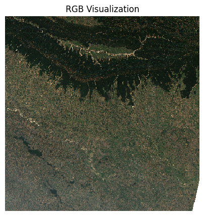
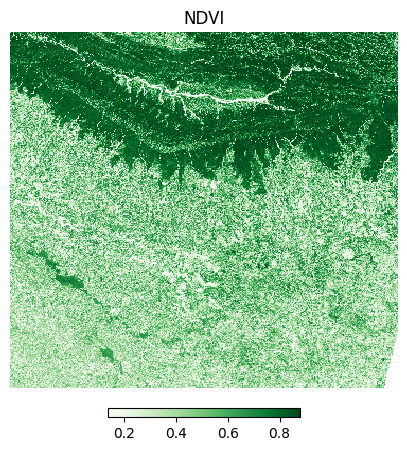
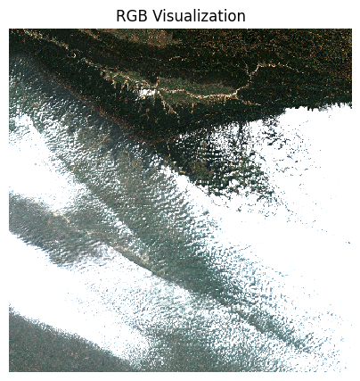
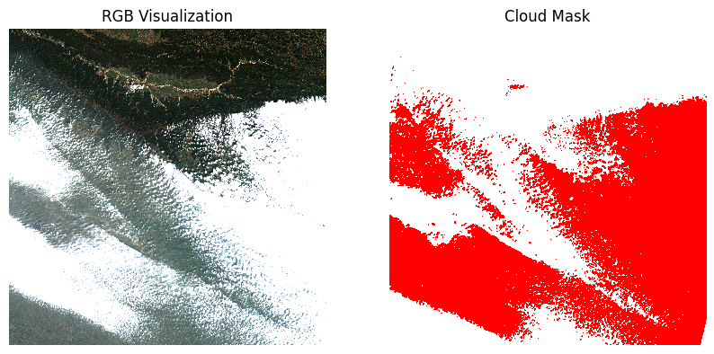
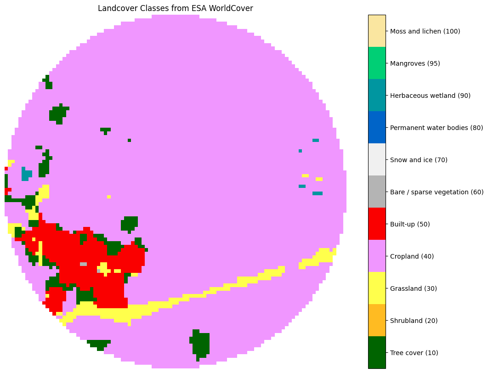
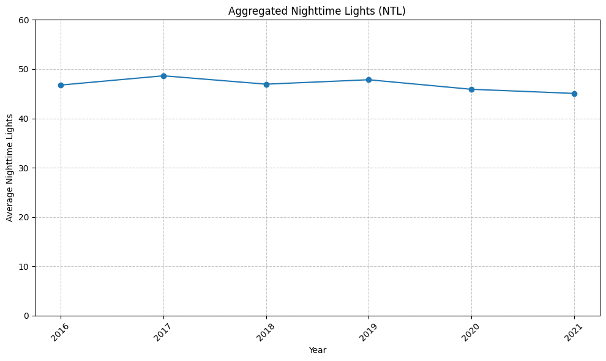

Cloud Native Remote Sensing with Python (Full Course)
A structured introduction to XArray, DuckDB, STAC and Dask for cloud-based remote sensing applications.
Ujaval Gandhi

Introduction
This is an intermediate-level course that covers tools and techniques for working with climate and earth observation datasets using modern cloud-native approach. With the growing ecosystem of cloud native data formats, open data catalogs and powerful open-source packages - remote sensing practitioners are now able to adopt open and vendor agnostic cloud-based data processing workflows. This class will cover how to implement these workflows using Python-based tooling with hands-on examples.

Notebooks and Datasets
This course uses Google Colab for all exercises. You do not need to install any packages or download any datasets.
The notebooks can be accessed by clicking on the  buttons at the beginning of each section. Once
you have opened the notebook in Colab, you can copy it to your own
account by going to File → Save a Copy in Drive.
buttons at the beginning of each section. Once
you have opened the notebook in Colab, you can copy it to your own
account by going to File → Save a Copy in Drive.

Once the notebooks are saved to your drive, you will be able to modify the code and save the updated copy. You can also click the Share button and share a link to the notebook with others.

Development Tools
Introduction to Google Colab

Google Colab is a hosted Jupyter notebook environment that allows anyone to run Python code via a web-browser. It provides you free computation and data storage that can be utilized by your Python code.
You can click the +Code button to create a new cell and
enter a block of code. To run the code, click the Run
Code button next to the cell, or press Shift+Enter
key.
Package Management
Colab comes pre-installed with many Python packages. You can use a package by simply importing it.
Each Colab notebook instance is run on a Ubuntu Linux machine in the
cloud. If you want to install any packages, you can run a command by
prefixing the command with a !. For example, you can
install third-party packages via pip using the command
!pip.
Tip: If you want to list all pre-install packages and their versions in your Colab environemnt, you can run
!pip list -v.
Data Management
Colab provides 100GB of disk space along with your notebook. This can be used to store your data, intermediate outputs and results.
The code below will create 2 folders named ‘data’ and ‘output’ in your local filesystem.
import os
data_folder = 'data'
output_folder = 'output'
if not os.path.exists(data_folder):
os.mkdir(data_folder)
if not os.path.exists(output_folder):
os.mkdir(output_folder)We can download some data from the internet and store it in the Colab environment. Below is a helper function to download a file from a URL.
import requests
def download(url):
filename = os.path.join(data_folder, os.path.basename(url))
if not os.path.exists(filename):
with requests.get(url, stream=True, allow_redirects=True) as r:
with open(filename, 'wb') as f:
for chunk in r.iter_content(chunk_size=8192):
f.write(chunk)
print('Downloaded', filename)Let’s download the Populated Places dataset from Natural Earth.
The file is now in our local filesystem. We can construct the path to
the data folder and read it using geopandas
Using AI-Assisted Coding
Google Colab comes with an Gemini AI assistant to help you write and debug code. You can click the Gemini spark icon in the notebook footer to open the main chat panel.
Let’s ask the assistant to write the code to filter our
places DataFrame. You can write the following prompt and
click send button:
Select all the places from `places` Dataframe which are country capitals and save to a new variable `capitals`.The coding agent will add a new cell in the notebook like below.
Saving Outputs
We can write the results to the disk as a GeoPackage file. After
running the cell, open the Files tab from the left-hand
panel in Colab and browse to the output folder. Locate the
capitals.gpkg file and click the ⋮ button
and select Download to download the file locally.
output_file = 'capitals.gpkg'
output_path = os.path.join(output_folder, output_file)
capitals.to_file(driver='GPKG', filename=output_path)The local disk is not persistent and the data will be deleted when the Colab Runtime is disconnected. Instead, we can save it to our own Google Drive. This will ensure the image will be available to us even after existing Google Colab.
Run the following cell to authenticate and mount the Google Drive.
if 'google.colab' in str(get_ipython()):
from google.colab import drive
drive.mount('/content/drive')if 'google.colab' in str(get_ipython()):
output_folder_path = os.path.join(
'/content/drive', drive_folder_root, output_folder)
# Check if Google Drive is mounted
if not os.path.exists('/content/drive'):
print('Google Drive is not mounted. ',
'Please run the cell above to mount your drive.')
else:
if not os.path.exists(output_folder_path):
os.makedirs(output_folder_path)
print(f'Created {output_folder_path}')Using the Terminal (Advanced)
A recent update to Google Colab added support for Terminal within Google Colab. Terminal access allows you to run Linux commands directly on your Colab Runtime and gives you advanced capabilities to do more analysis in the cloud.
You can open the terminal by clicking on the Terminal button in the bottom left of the notebook.
The Terminal opens in the default /content directory. As
we have created a data folder, we can use the
cd command to navigate to it and ls command to
list the files.
cd data
lsDownloading Data
As we have access to standard Linux commands, we can use
wget command to download data from the internet.
wget https://data.chc.ucsb.edu/products/CHIRPS-2.0/global_annual/tifs/chirps-v2.0.2024.tifInstalling Packages
We can use the popular GDAL utilities
to help conversion of data formats. Run the following command to install
the gdal-bin package.
apt-get install gdal-binData Conversion
We can use the gdal_translate command to convert the
downloaded GeoTIFF file to a Cloud-Optimized GeoTIFF.
gdal_translate -of COG chirps-v2.0.2024.tif chirps-v2.0.2024_cog.tifWe can copy the resulting file to our Google Drive folder using the
Linux cp command.
cp chirps-v2.0.2024_cog.tif /content/drive/MyDrive/python-remote-sensing/Introduction to GeoLibre
GeoLibre is an open-source cloud-native GIS platform that supports loading and visualizing a wide-variety of cloud-native geospatial data formats. It is well suited for cloud-native data work - exploring large datasets, collecting training samples, interactively visualizing outputs and more.
We will be using the GeoLibre Viewer in this course.
AI Coding Agents
Google Gemini in Colab
We recommend using the built-in Gemini integration in Google Colab for writing, modifying and updating code in the provided notebooks.
Claude Code
We have provided a Claude Code skill cloud-native-remote-sensing that captures the best-practices and workflows taught in this course. You can install this skill for your agent and use it when creating new notebooks or working on more complex updates.
Module 1: Cloud Native Geospatial Fundamentals

1.1 XArray Basics

Overview
XArray
has emerged as one of the key Python libraries to work with gridded
raster datasets. It can natively handle time-series data making it ideal
for working with Remote Sensing datasets. It builds on NumPy/Pandas for
fast arrays/indexing and is orders of magnitude faster than other Python
libraries like rasterio. It has a growing ecosystem of
extensions rioxarray, xarray-spatial,
XEE and more allowing it to be used for geospatial
analysis. XArray offers the flexibility to seamlessly work with local
datasets along with cloud-hosted datasets in a variety of optimized data
formats.
In this section, we will learn about XArray basics and learn how to work with a time-series of Sentinel-2 satellite imagery to create and visualize a median composite image.
Setup
Determine our runtime environment.
import os
if 'COLAB_RELEASE_TAG' in os.environ:
environment = 'colab'
if os.environ.get('VERTEX_PRODUCT') == 'COLAB_ENTERPRISE':
environment = 'colab_enterprise'
else:
environment = 'local'
print(f'Environment: {environment}')If we are on Google Colab, install the required packages. Local runtimes are expected to have the packages already installed.
%%capture
if environment in ['colab', 'colab_enterprise']:
!pip install pystac-client odc-stac rioxarray dask['distributed'] botocoreImport all required libraries. Make sure to import everything at the
beginning as certain Xarray extensions are activated on import and
registers certain accesors, like .rio and .odc
for Xarray objects.
Get Satellite Imagery
We define a location and time of interest to get some satellite imagery.
Let’s use Element84 search endpoint to look for items from the sentinel-2-l2a collection on AWS.
catalog = pystac_client.Client.open(
'https://earth-search.aws.element84.com/v1')
# Configure settings for reading from Earth Search STAC
configure_s3_access(
aws_unsigned=True,
)
# Define a small bounding box around the chosen point
km2deg = 1.0 / 111
x, y = (longitude, latitude)
r = 1 * km2deg # radius in degrees
bbox = (x - r, y - r, x + r, y + r)
search = catalog.search(
collections=['sentinel-2-c1-l2a'],
bbox=bbox,
datetime=f'{year}',
query={'eo:cloud_cover': {'lt': 30}},
)
items = search.item_collection()Load the matching images as a XArray Dataset.
XArray Terminology
We now have a xarray.Dataset object. Let’s understand
what is contained in a Dataset.
- Variables: This is similar to a band in a raster dataset. Each variable contains an array of values.
- Dimensions: This is similar to number of array axes.
- Coordinates: These are the labels for values in each dimension.
- Attributes: This is the metadata associated with the dataset.

Let’s see our Dataset and see what variables,
coordinates and dimensions it contains.
A Dataset consists of one or more xarray.DataArray
object. This is the main object that consists of a single variable with
dimension names, coordinates and attributes. You can access each
variable using dataset.variable_name syntax.
Selecting Data
XArray provides a very powerful way to select subsets of data, using
similar framework as Pandas. Similar to Panda’s loc and
iloc methods, XArray provides sel and
isel methods. Since DataArray dimensions have names, these
methods allow you to specify which dimension to query.
Let’s select the image for the last time step. Since we know the
index (-1) of the data we can use isel method.
You can call .values on a DataArray to get an array of
the values.
You can query for a values at using multiple dimensions.
You can use .item() on any output to get the standard
Python scalar object.
We can also specify a value to query using the sel()
method.
Let’s see what are the values of time variable.
We can query using the value of a coordinate using the
sel() method.
The sel() method also support nearest neighbor lookups.
This is useful when you do not know the exact label of the dimension,
but want to find the closest one.
Tip: You can use
interp()instead ofsel()to interpolate the value instead of closest lookup.
We can query using partial data strings for broad matches as well.
The sel() method also allows specifying range of values
using Python’s built-in slice() function. The code below
will select all observations during January 2023.
Aggregating Data
A very-powerful feature of XArray is the ability to easily aggregate data across dimensions - making it ideal for many remote sensing analysis. Let’s create a median composite from all the individual images.
We apply the .median() aggregation across the
time dimension.
Visualizing Data
XArray provides a plot.imshow() method based on
Matplotlib to plot DataArrays.
Reference : xarray.plot.imshow
To visualize our Dataset, we first convert it to a DataArray using
the to_array() method. All the variables will be converted
to a new dimension. Since our variables are image bands, we give the
name of the new dimesion as band.
The easy way to visualize the data without the outliers is to pass
the parameter robust=True. This will use the 2nd and 98th
percentiles of the data to compute the color limits. We also specify the
set_aspect('equal') to ensure the original aspect ratio is
maintained and the image is not stretched.
fig, ax = plt.subplots(1, 1)
fig.set_size_inches(5,5)
median_da.sel(band=['red', 'green', 'blue']).plot.imshow(
ax=ax,
robust=True)
ax.set_title('RGB Visualization')
ax.set_axis_off()
ax.set_aspect('equal')
plt.show()
Exercise
Display the median composite for the month of May.
The snippet below takes our time-series and aggregate it to a monthly
median composites groupby() method.
You now have a new dimension named month. Start your
exercise by first converting the Dataset to a DataArray. Then extract
the data for the chosen month using sel() method and plot
it.
1.2 STAC and Dask Basics

Overview
In this section, we will learn the basics of querying cloud-hosted data via STAC and leverage parallel computing via Dask.
We will learn how to query a catalog of Sentinel-2 images to find the least-cloudy scene over a chosen area, visualize it and download it as a GeoTIFF file.
Setup
Determine our runtime environment.
import os
if 'COLAB_RELEASE_TAG' in os.environ:
environment = 'colab'
if os.environ.get('VERTEX_PRODUCT') == 'COLAB_ENTERPRISE':
environment = 'colab_enterprise'
else:
environment = 'local'
print(f'Environment: {environment}')If we are on Google Colab, install the required packages. Local runtimes are expected to have the packages already installed.
%%capture
if environment in ['colab', 'colab_enterprise']:
!pip install pystac-client odc-stac rioxarray dask['distributed'] botocore \
jupyter-server-proxyImport all required libraries. Make sure to import everything at the
beginning as certain Xarray extensions are activated on import and
registers certain accesors, like .rio and .odc
for Xarray objects.
Dask
Dask is a python
library to run your computation in parallel across many machines. Dask
has built-in support for key geospatial packages like XArray and Pandas
allowing you to scale your computation easily. You can choose to run
your code in parallel on your laptop, a machine in the cloud, local or
cloud cluster of machines etc.
If you are running this notebook in Colab, you will need to create and use a proxy URL to see the dashboard running on the local server.
Spatio Temporal Asset Catalog (STAC)
Spatio Temporal Asset Catalog (STAC) is an open standard for specifying and querying geospatial data. Data provider can share catalogs of satellite imagery ,climate datasets, LIDAR data, vector data etc. and specify asset metadata according to the STAC specifications. All STAC catalogs can be queried to find matching assets by time, location or metadata.
You can browse all available catalogs at https://stacindex.org/
Let’s use Earth Search by Element 84 STAC API Catalog to look for items from the sentinel-2-l2a collection on AWS.
The STAC API Catalog offers several collections. Some of the
collections are publicly-available (such as Sentinel-2 Collection 1
Level-2A (sentinel-2-c1-l2a)), while others are
available in a Requester
Pays bucket. To access data from a requester-pays bucket, you will
need to ssupply your AWS credentials. Here we are accessing freely
available data, so we set the configuration to not use credentials.
We define a location to get some satellite imagery.
# Define a small bounding box around the chosen point
km2deg = 1.0 / 111
x, y = (longitude, latitude)
r = 1 * km2deg # radius in degrees
bbox = (x - r, y - r, x + r, y + r)Search the catalog for matching items. See the documentation of the
pystac_client.Client.search()
method for details on the parameters and valid values.
search = catalog.search(
collections=['sentinel-2-c1-l2a'],
bbox=bbox,
datetime='2023-01-01/2023-12-31',
)
items = search.item_collection()
itemsThe datatime parameter can take a range or a single
datetime. Here we specify 2023 which gets expanded to the
range for the full year. We can also apply some additional metadata
filters using the query parameter to look for images with
less cloud cover and granules with less nodata pixels.
search = catalog.search(
collections=['sentinel-2-c1-l2a'],
bbox=bbox,
datetime='2023',
query={'eo:cloud_cover': {'lt': 30}, 's2:nodata_pixel_percentage': {'lt': 10}}
)
items = search.item_collection()
itemsWe can also sort the results by some metadata. Here we sort by cloud cover.
Load STAC Images to XArray
Load the matching images as a XArray Dataset using odc.stac.load().
We need to specify the required resolution and projection. This
crs parameter in the function accepts a special value
utm which automatically picks the appropriate UTM
projection for the region.
ds = load(
items,
bands=['red', 'green', 'blue', 'nir'],
resolution=10,
crs='utm',
chunks={}, # <-- use Dask
groupby='solar_day',
preserve_original_order=True
)
dsUsexarray.Dataset.nbytes
property to check the size of the loaded dataset.
Select a Single Scene
Let’s work with a single scene for now. We will use the first item
from our search (the least cloudy scene). When the items are loaded as a
XArray Dataset, the time dimension is sorted. We get the
timestamp of the least cloudy scene and select it from the dataset.
timestamp = pd.to_datetime(items[0].properties['datetime']).tz_convert(None)
scene = ds.sel(time=timestamp)
sceneThis scene is small enough to fit into RAM, so we can load it into memory. As we setup a Dask LocalCluster, the process will be paralellized across all available cores of the machine. We can visualize the Dask graph to know the steps required to compute each chunk.
Let’s call compute() to kick-off the dask graph. Dask
will query the cloud-hosted dataset to fetch the required pixels. Once
you run the cell, look at the Dask Diagnostic Dashboard to see the data
processing in action.
The Sentinel-2 scenes come with NoData value of 0. So we set the correct NoData value before further processing.
Each band of the scene is saved with integer pixel values (data type
uint16). This help save the storage cost as storing the
reflectance values as floating point numbers (data type
float64) requires more storage. We need to convert the raw
pixel values to reflectances by applying the scale and
offset values. The Earth Search STAC
API does not apply the scale/offset automatically to Sentinel-2
scene and they are supplied in the raster:bands metadata
for each band. The scale and offset for sentinel-2 scenes captured after
Jan 25, 2022 is 0.0001 and -0.1
respectively.
Visualize the Scene
We can create a low-resolution preview by resampling the DataArray
from its native resolution. The raster metadata is stored in the rio
accessor. This is enabled by the rioxarray library
which provides geospatial functions on top of xarray.
This is a fairly large scene with a lot of pixels. For visualizing, we resample it to a lower resolution preview.
To visualize our Dataset, we first convert it to a DataArray using
the to_array() method. All the variables will be converted
to a new dimension. Since our variables are image bands, we give the
name of the new dimesion as band.
Let’s visualize the scene with RGB bands.
fig, ax = plt.subplots(1, 1)
fig.set_size_inches(5,5)
preview_da.sel(band=['red', 'green', 'blue']).plot.imshow(
ax=ax)
ax.set_title('RGB Visualization')
ax.set_axis_off()
ax.set_aspect('equal')
plt.show()We can improve the contrast by supplying the vmin and
vmax values. Typical range of reflectances is between 0-0.3
so we apply those.
fig, ax = plt.subplots(1, 1)
fig.set_size_inches(5,5)
preview_da.sel(band=['red', 'green', 'blue']).plot.imshow(
ax=ax,
vmin=0,
vmax=0.3)
ax.set_title('RGB Visualization')
ax.set_axis_off()
ax.set_aspect('equal')
plt.show()
When plotting the image, we can supply robust=True
option applies a 98-percentile stretch to find the optimal
min/max values for visualization.
fig, ax = plt.subplots(1, 1)
fig.set_size_inches(5,5)
preview_da.sel(band=['red', 'green', 'blue']).plot.imshow(
ax=ax,
robust=True)
ax.set_title('RGB Visualization')
ax.set_axis_off()
ax.set_aspect('equal')
plt.show()
Exercise
The items variable contains a list of STAC Items
returned by the query. The code below iterates through each item and
print its metadata stored in the properties. Extract the
Sentinel-2 Product ID stored in s2:product_uri peroperty
and print a list of all image ids returned by the query.
1.3 DuckDB Basics

Overview
In this section, we will explore cloud-native vector datasets and use DuckDB to query and load data directly from cloud. We also use Lonboard for interactively visualizing query results.
Overview of the Task
We will query and load an Administrative Boundaries dataset provided by FieldMaps as a cloud-native GeoParquet file. We will interactively query and save the required boudary polygon for our analysis.
Setup
Determine our runtime environment.
import os
if 'COLAB_RELEASE_TAG' in os.environ:
environment = 'colab'
if os.environ.get('VERTEX_PRODUCT') == 'COLAB_ENTERPRISE':
environment = 'colab_enterprise'
else:
environment = 'local'
print(f'Environment: {environment}')If we are on Google Colab, install the required packages. Local runtimes are expected to have the packages already installed.
Import packages.
DuckDB
DuckDb is a modern high-performance database engine that allows querying large files easily. It has built-in support for spatial data and can be used to query large remote spatial files without downloading it first.
We initialize DuckDB and enable the spatial extension.
Query Remote Dataset
FieldMaps provides open
datasets of global administrative boundaries from multiple providers. We
will query the Admin2 boundaries from GeoBoundaries in the GeoParquet
format. The souce data is a 2 GB .parquet file containing
48000+ polygons. Instead of downloading this, we can query it and
extract just the subset we require.
DuckDB supports standard SQL syntax for querying. Let’s check some basic information about the dataset.
query = f'''
SELECT COUNT(*) FROM read_parquet('{parquet_url}')
'''
result = con.sql(query).fetchone()
print('Total Features', result)We can use DESCRIBE clause to get the available columns.
We can turn the results of any query to a DataFrame using the
.df().
query = f'''
DESCRIBE SELECT * FROM read_parquet('{parquet_url}')
'''
columns = con.sql(query).df()
columnsWe can now form a query to find all all Admin1 names
(States/Provinces) in a specific country. We will use this in the next
step to fetch all Admin2 regions within a specific Admin1 area. The
adm0_src uses the 3-digit ISO
code for each country.
country = 'USA'
query = f'''
SELECT DISTINCT adm1_name
FROM read_parquet('{parquet_url}')
WHERE adm0_src = '{country}'
ORDER BY adm1_name
'''
admin1_df = con.sql(query).df()
admin1_dfNotice that the dataset has a geometry column which
stores the layer geometry. We can now query for all Admin2 polygons
within our chosen Admin1 region. Also since Parquet is a columnar
format, so it is efficient to fetch only the required columns.
adm1_name = 'California'
query = f'''
SELECT adm1_name, adm1_id, adm2_name, adm2_id, ST_AsWKB(geometry) AS geometry
FROM read_parquet('{parquet_url}')
WHERE
adm0_src = '{country}' and
adm1_name = '{adm1_name}'
'''
admin2_df = con.sql(query).df()We turn the results into a GeoPandas GeoDataFrame by specifying the geometry column and the CRS.
admin2_gdf = gpd.GeoDataFrame(
admin2_df,
geometry=gpd.GeoSeries.from_wkb(admin2_df['geometry'].apply(bytes)),
crs='EPSG:4326')
admin2_gdfWe can visualize the Admin2 polygons.
Save the Results
We can save the selected subset as a GeoPackage. We can now save it as a file.
On Google Colab, data saved to the local filesystem will be deleted when the runtime is disconnected. It is recommended to save it to permanent cloud storage so you will have access to it later.
Google Colab has a built-in integration with Google Drive and
provides the easiest solution for storing persistent data. The following
cell mounts your Google Drive in the Colab runtime. If you do not want
to use Google Drive, set use_google_drive=False and it will
be saved on the local filesystem that you can download.
import os
# Set to True to use Google Drive for data storage in Colab
use_google_drive = True
# Google Drive is available only in 'colab' environment
if environment == 'colab' and use_google_drive:
from google.colab import drive
drive.mount('/content/drive')
drive_folder_root = 'MyDrive'
drive_data_folder = 'python-remote-sensing'
drive_folder_path = os.path.join('/content/drive', drive_folder_root, drive_data_folder)
data_folder = drive_folder_path
output_folder = drive_folder_path
else:
output_folder = 'output'
if not os.path.exists(output_folder):
os.mkdir(output_folder)
print(f'Environment: {environment}')
print(f'Output folder: {output_folder}')Exercise
Overture Maps provides free and open map data curated from sources like OpenStreetMap. The entire dataset is available in cloud-native GeoParquet format.
Extract the boundary for your selected city and save it to your
output directory in GeoJSON format as aoi.geojson.
Tips
Use the cells below with the starter code.
- Search for your city/region of interest using Overture Explorer and replace the name, country and region with your own area of interest.
- Cities are not uniformly represented across the world. Some cities
are tagged as locality while others with county or
localadmin. The SQL query below tries to capture all the
variations, but if you get no matches, you can relax the query by
commenting out some lines by prefixing it with
--. - By default the boundary tagged as
localitywill be picked. To see other options comment the line starting withLIMIT 1.
# Overture does monthly releases of their dataset
# Find the latest release at https://stac.overturemaps.org/
OVERTURE_RELEASE = '2026-05-20.0'
s3_path = (
f's3://overturemaps-us-west-2/release/{OVERTURE_RELEASE}/'
'theme=divisions/type=division_area/*'
)
query = f'''
SELECT
id,
names.primary AS primary_name,
names.common.en AS common_name,
subtype,
country,
region,
ST_AsWKB(geometry) AS geometry
FROM read_parquet(
'{s3_path}',
filename=true,
hive_partitioning=1
)
WHERE subtype in ('locality', 'county', 'localadmin', 'region') AND
country = '{country_iso2}' AND
region = '{region}' AND
(names.primary ILIKE '{city_name}' OR names.common.en ILIKE '{city_name}') AND
is_land = true -- exclude maritime extensions
ORDER BY
-- prefer 'locality' over other types
CASE subtype WHEN 'locality' THEN 0 ELSE 1 END
LIMIT 1
'''
results = con.sql(query).df()
resultsView the resulting boundary.
1.4 Creating a Median Composite

Overview
We are now ready to perform a large computation to create a median composite image for a city using XArray and Dask, leveraging STAC and DuckDB for querying cloud-hosted data sources.
Overview of the Task
We will query the Overture Maps catalog for the boundary for the city of Bengaluru, India, use it to query a STAC catalog for Sentinel-2 imagery for a chosen period and then use XArray and Dask to create a median composite image using distributed processing.
Setup
Determine our runtime environment.
import os
if 'COLAB_RELEASE_TAG' in os.environ:
environment = 'colab'
if os.environ.get('VERTEX_PRODUCT') == 'COLAB_ENTERPRISE':
environment = 'colab_enterprise'
else:
environment = 'local'
# Set to True to use Google Drive for data storage in Colab
use_google_drive = True
# Google Drive is available only in 'colab' environment
if environment == 'colab' and use_google_drive:
from google.colab import drive
drive.mount('/content/drive')
drive_folder_root = 'MyDrive'
drive_data_folder = 'python-remote-sensing'
drive_folder_path = os.path.join('/content/drive', drive_folder_root, drive_data_folder)
data_folder = drive_folder_path
output_folder = drive_folder_path
else:
data_folder = 'data'
output_folder = 'output'
if not os.path.exists(data_folder):
os.mkdir(data_folder)
if not os.path.exists(output_folder):
os.mkdir(output_folder)
print(f'Environment: {environment}')
print(f'Data folder: {data_folder}')
print(f'Output folder: {output_folder}')If we are on Google Colab, install the required packages. Local runtimes are expected to have the packages already installed.
%%capture
if environment in ['colab', 'colab_enterprise']:
!pip install pystac-client odc-stac rioxarray dask['distributed'] botocore \
jupyter-server-proxyImport all required libraries. Make sure to import everything at the
beginning as certain Xarray extensions are activated on import and
registers certain accesors, like .rio and .odc
for Xarray objects.
import dask
import matplotlib.pyplot as plt
import os
import pandas as pd
import geopandas as gpd
import numpy as np
import pystac_client
import rioxarray as rxr
import xarray as xr
from odc.stac import configure_s3_access, loadSetup a local Dask cluster. This distributes the computation across multiple workers on your computer.
If you are running this notebook in Colab, you will need to create and use a proxy URL to see the dashboard running on the local server.
Load City Boundary
Read the file containing the city boundary.
aoi_filepath = os.path.join(data_folder, 'aoi.geojson')
if not os.path.exists(aoi_filepath):
raise FileNotFoundError(f'AOI file not found at {aoi_filepath}. Please ensure the file exists.')Read the GeoJSON.
Extract the geometry.
Search and Load Sentinel-2 Imagery
Let’s use Element84 search endpoint to look for items from the
sentinel-2-c1-l2a collection on AWS. We search for the
imagery collected within the date range and intersecting the AOI
geometry.
We also specify additonal filters to select scenes based on metadata.
The parameter eo:cloud_cover contains the overall cloud
percentage and we use it to select imagery with < 30% overall cloud
cover.
catalog = pystac_client.Client.open(
'https://earth-search.aws.element84.com/v1')
# Configure settings for reading from Earth Search STAC
configure_s3_access(
aws_unsigned=True,
)
# Search for images for the year
year = 2024
time_range = f'{year}'
# Optionally, we can specify a range of months
# start_month = 4
# end_month = 6
# time_range = f'{year}-{start_month:02d}/{year}-{end_month:02d}'
filters = {
'eo:cloud_cover': {'lt': 30},
}
search = catalog.search(
collections=['sentinel-2-c1-l2a'],
intersects=geometry,
datetime=time_range,
query=filters,
)
items = search.item_collection()
len(items)Visualize the resulting image footprints. You can see that our AOI covers only a small part of a single scene. When we process the data for our AOI - we will only stream the required pixels to create the composite instead of downloading entire scenes.
items_gdf = gpd.GeoDataFrame.from_features(items.to_dict(), crs='EPSG:4326')
fig, ax = plt.subplots(1, 1)
fig.set_size_inches(5,5)
items_gdf.plot(
ax=ax,
facecolor='none',
edgecolor='black',
alpha=0.5)
aoi_gdf.plot(
ax=ax,
facecolor='blue',
alpha=0.5
)
ax.set_axis_off()
ax.set_title('STAC Query Results')
plt.show()Load the matching images as a XArray Dataset.
ds = load(
items,
bands=['red', 'green', 'blue', 'nir'],
resolution=10,
bbox=geometry.bounds,
crs='utm',
chunks={}, # <-- use Dask
groupby='solar_day',
)
dsThe Sentinel-2 scenes come with NoData value of 0. So we set the correct NoData value before further processing.
Apply scale and offset to all spectral bands
Create a Median Composite
A very-powerful feature of XArray is the ability to easily aggregate data across dimensions - making it ideal for many remote sensing analysis. Let’s create a median composite from all the individual images.
We apply the .median() aggregation across the time
dimension.
Select the required bands.
So far all the operations that we have created a computation graph.
To run this computation using the local Dask cluster, we must call
.compute().
Visualize the Results
The composite is creating from all the pixels within the bounding box
of the geometry. We can use rioxarray to clip the image to
the city boundary to remove pixels outside the polygon.
To visualize our Dataset, we first convert it to a DataArray using
the to_array() method. All the variables will be converted
to a new dimension. Since our variables are image bands, we give the
name of the new dimesion as band.
image_crs = rgb_composite_da.rio.crs
aoi_gdf_reprojected = aoi_gdf.to_crs(image_crs)
rgb_composite_clipped = rgb_composite_da.rio.clip(aoi_gdf_reprojected.geometry)
rgb_composite_clippedFor visualizing, we resample it to a lower resolution preview
fig, ax = plt.subplots(1, 1)
fig.set_size_inches(5,5)
preview.sel(band=['red', 'green', 'blue']).plot.imshow(
ax=ax,
robust=True)
ax.set_title('RGB Visualization')
ax.set_axis_off()
ax.set_aspect('equal')
plt.show()We can manually apply a contrast stretch as well.
Export the Composite
We use the rio accessor to save the results as a
Cloud-Optimized GeoTIFF.
output_file = f'raw_composite_{time_range}.tif'
output_path = os.path.join(output_folder, output_file)
rgb_composite_clipped.rio.to_raster(output_path, driver='COG')
print(f'Wrote {output_path}')The raw composite is suitable for downstream scientific analysis as it preserves the pixel reflectance values.Sometimes it is desirable to export the output as a colorized RGBA image. This visualized output suitable for use user-facing applications like basemaps or prints.
The odc-geo package provides a handy to_rgba()
function to save the visualized version of the composite. This function
can be used via the .odc accessor.
# Convert to a Xarray Dataset first
rgb_composite_ds = rgb_composite_clipped.to_dataset(dim='band')
composite_rgba = rgb_composite_ds.odc.to_rgba(
vmin=stretch_vmin, vmax=stretch_vmax)Save the visualized output.
Exercise
Create and export a median composite for your city using the boundary extracted in the previous section.
Assignment 1

Create a Landsat Composite
Microsoft’s Planetary Computer Data Catalog hosts a large collection of remote sensing datasets and is served via STAC API.
Your task is to access the Landsat Collection 2 Level-2 collection and create a RGB median composite for Landsat-8 images for your chosen area of interest and year.
Notes:
- Data acces from Planetary Computer is largely similar to other STAC APIs but requires obtaining a signed url. This notebook provides the code snippets below to show the access pattern.
- The
landsat-c2-l2collection contains images from all Landsat satellites. You will need to add a filter in your search query to select images fromlandsat-8platform. - Landsat image bands have different scale and offsets. Look at the metadata of a STAC item to find the appropriate values.
Install and use the planetary_computer
python package.
Accessing data from Planetary Computer is free but requires getting a
Shared Access Signature (SAS) token and sign the URLs. The
planetary_computer Python package provides a simple
mechanism for signing the URLs using sign() function.
Specify the patch_url parameter in
odc.stac.load() function.
Module 2: Remote Sensing Fundamentals
2.1 Calculating Spectral Indices

Overview
Spectral indices are core to many remote sensing analysis. In this section, we will learn how can we perform calculations using XArray.
We will take a single Sentinel-2 scene and calculate spectral indices like NDVI, MNDWI and SAVI.
Setup
Determine our runtime environment.
import os
if 'COLAB_RELEASE_TAG' in os.environ:
environment = 'colab'
if os.environ.get('VERTEX_PRODUCT') == 'COLAB_ENTERPRISE':
environment = 'colab_enterprise'
else:
environment = 'local'
# Set to True to use Google Drive for data storage in Colab
use_google_drive = True
# Google Drive is available only in 'colab' environment
if environment == 'colab' and use_google_drive:
from google.colab import drive
drive.mount('/content/drive')
drive_folder_root = 'MyDrive'
drive_data_folder = 'python-remote-sensing'
drive_folder_path = os.path.join('/content/drive', drive_folder_root, drive_data_folder)
data_folder = drive_folder_path
output_folder = drive_folder_path
else:
data_folder = 'data'
output_folder = 'output'
if not os.path.exists(data_folder):
os.mkdir(data_folder)
if not os.path.exists(output_folder):
os.mkdir(output_folder)
print(f'Environment: {environment}')
print(f'Data folder: {data_folder}')
print(f'Output folder: {output_folder}')If we are on Google Colab, install the required packages. Local runtimes are expected to have the packages already installed.
%%capture
if environment in ['colab', 'colab_enterprise']:
!pip install pystac-client odc-stac rioxarray dask['distributed'] jupyter-server-proxyImport all required libraries. Make sure to import everything at the
beginning as certain Xarray extensions are activated on import and
registers certain accesors, like .rio and .odc
for Xarray objects.
import dask
import matplotlib.pyplot as plt
import numpy as np
import os
import pandas as pd
import pystac_client
import rioxarray as rxr
import xarray as xr
from odc.stac import configure_s3_access, loadSetup a local Dask cluster. This distributes the computation across multiple workers on your computer.
If you are running this notebook in Colab, you will need to create and use a proxy URL to see the dashboard running on the local server.
Get a Sentinel-2 Scene
We define a location and time of interest to get some satellite imagery.
# Define a small bounding box around the chosen point
km2deg = 1.0 / 111
x, y = (longitude, latitude)
r = 1 * km2deg # radius in degrees
bbox = (x - r, y - r, x + r, y + r)Search the catalog for matching items.
# Query the STAC Catalog
catalog = pystac_client.Client.open(
'https://earth-search.aws.element84.com/v1')
search = catalog.search(
collections=['sentinel-2-c1-l2a'],
bbox=bbox,
datetime=f'{year}',
query={'eo:cloud_cover': {'lt': 30}, 's2:nodata_pixel_percentage': {'lt': 10}},
sortby=[{'field': 'properties.eo:cloud_cover', 'direction': 'asc'}]
)
items = search.item_collection()
# Load to XArray
ds = load(
items,
bands=['red', 'green', 'blue', 'nir', 'swir16'],
resolution=10,
crs='utm',
chunks={}, # <-- use Dask
groupby='solar_day',
preserve_original_order=True
)
# Select the first scene
timestamp = pd.to_datetime(items[0].properties['datetime']).tz_convert(None)
scene = ds.sel(time=timestamp)
# Mask nodata values
scene = scene.where(scene != 0)
# Apply scale/offset
scale = 0.0001
offset = -0.1
scene = scene*scale + offsetVisualize the Scene
To visualize our Dataset, we first convert it to a DataArray using
the to_array() method. All the variables will be converted
to a new dimension. Since our variables are image bands, we give the
name of the new dimesion as band.
Rather than loading the entire scene into memory, we resample it to a lower resolution preview and render it.
preview = scene_da.rio.reproject(
scene.rio.crs, resolution=300
)
fig, ax = plt.subplots(1, 1)
fig.set_size_inches(5,5)
preview.sel(band=['red', 'green', 'blue']).plot.imshow(
ax=ax,
robust=True)
ax.set_title('RGB Visualization')
ax.set_axis_off()
ax.set_aspect('equal')
plt.show()We can also view a False Color Composite (FCC) with a different combination of spectral bands.
fig, ax = plt.subplots(1, 1)
fig.set_size_inches(5,5)
preview.sel(band=['nir', 'red', 'green']).plot.imshow(
ax=ax,
robust=True)
ax.set_title('NRG Visualization')
ax.set_axis_off()
plt.show()
Calculate Spectral Indices
The Normalized Difference Vegetation Index (NDVI) is calculated using the following formula:
NDVI = (NIR - Red)/(NIR + Red)
Where: * NIR = Near-Infrared band reflectance * Red = Red band reflectance
Let’s visualize the results.
ndvi_preview = ndvi.rio.reproject(
ndvi.rio.crs, resolution=300
)
cbar_kwargs = {
'orientation':'horizontal',
'fraction': 0.025,
'pad': 0.05,
'extend':'neither'
}
fig, ax = plt.subplots(1, 1)
fig.set_size_inches(5,5)
ndvi_preview.plot.imshow(
ax=ax,
cmap='Greens',
robust=True,
cbar_kwargs=cbar_kwargs)
ax.set_title('NDVI')
ax.set_axis_off()
plt.show()
The Modified Normalized Difference Water Index (MNDWI) is calculated using the following formula:
MNDWI = (Green - SWIR1)/(Green + SWIR1)
Where: * Green = Green band reflectance * SWIR1 = Short-wave infrared band 1 reflectance
green = scene_da.sel(band='green')
swir16 = scene_da.sel(band='swir16')
mndwi = (green - swir16)/(green + swir16)The Soil Adjusted Vegetation Index (SAVI) is calculated using the following formula:
SAVI = (1 + L) * ((NIR - Red)/(NIR + Red + L))
Where: * NIR = Near-Infrared band reflectance * Red = Red band reflectance * L = Soil brightness correction factor (typically 0.5 for moderate vegetation)
Save the Computed Indices
Rather than saving it to the temporary machine where Colab is running, we can save it to our own Google Drive. This will ensure the image will be available to us even after exiting Google Colab.
Exercise
Apply a threshold to the NDVI values to create a binary raster.
Hint: Use the xarray.where
function that allows you to set both matching and non-matching
values.
2.2 Masking Clouds

Overview
When working with optical satellite imagery, we need to ensure the cloudy-pixels are removed from analysis. Most providers supply QA bands detailing locations of cloudy pixels. There are also third-party cloud-masking packages that can be used to locate and mask cloudy pixels.
In this section, we will use the Scene Classification (SCL) band supplied with Sentinel-2 Level-2A images to remove clouds and cloud-shadows from a scene.
Setup
Determine our runtime environment.
import os
if 'COLAB_RELEASE_TAG' in os.environ:
environment = 'colab'
if os.environ.get('VERTEX_PRODUCT') == 'COLAB_ENTERPRISE':
environment = 'colab_enterprise'
else:
environment = 'local'
# Set to True to use Google Drive for data storage in Colab
use_google_drive = True
# Google Drive is available only in 'colab' environment
if environment == 'colab' and use_google_drive:
from google.colab import drive
drive.mount('/content/drive')
drive_folder_root = 'MyDrive'
drive_data_folder = 'python-remote-sensing'
drive_folder_path = os.path.join('/content/drive', drive_folder_root, drive_data_folder)
data_folder = drive_folder_path
output_folder = drive_folder_path
else:
data_folder = 'data'
output_folder = 'output'
if not os.path.exists(data_folder):
os.mkdir(data_folder)
if not os.path.exists(output_folder):
os.mkdir(output_folder)
print(f'Environment: {environment}')
print(f'Data folder: {data_folder}')
print(f'Output folder: {output_folder}')If we are on Google Colab, install the required packages. Local runtimes are expected to have the packages already installed.
%%capture
if environment in ['colab', 'colab_enterprise']:
!pip install pystac-client odc-stac rioxarray dask['distributed'] jupyter-server-proxyImport all required libraries. Make sure to import everything at the
beginning as certain Xarray extensions are activated on import and
registers certain accesors, like .rio and .odc
for Xarray objects.
import dask
import matplotlib.pyplot as plt
import numpy as np
import os
import pandas as pd
import pystac_client
import rioxarray as rxr
import xarray as xr
from matplotlib.colors import ListedColormap
from odc.stac import configure_s3_access, loadSetup a local Dask cluster. This distributes the computation across multiple workers on your computer.
If you are running this notebook in Colab, you will need to create and use a proxy URL to see the dashboard running on the local server.
Get a Sentinel-2 Scene
We define a location and time of interest to get some satellite imagery.
# Define a small bounding box around the chosen point
km2deg = 1.0 / 111
x, y = (longitude, latitude)
r = 1 * km2deg # radius in degrees
bbox = (x - r, y - r, x + r, y + r)Search the catalog for matching items. This time we use
'direction': 'desc' in the sortby parameter to
get results where the first scene has the highest cloud-cover.
# Query the STAC Catalog
catalog = pystac_client.Client.open(
'https://earth-search.aws.element84.com/v1')
search = catalog.search(
collections=['sentinel-2-c1-l2a'],
bbox=bbox,
datetime=f'{year}',
query={
'eo:cloud_cover': {'lt': 50},
's2:nodata_pixel_percentage': {'lt': 10}},
sortby=[
{'field': 'properties.eo:cloud_cover',
'direction': 'desc'}
]
)
items = search.item_collection()
# Load to XArray
ds = load(
items,
bands=['red', 'green', 'blue', 'scl'],
resolution=10,
crs='utm',
chunks={}, # <-- use Dask
groupby='solar_day',
preserve_original_order=True
)
# Select the first scene
timestamp = pd.to_datetime(items[0].properties['datetime']).tz_convert(None)
scene = ds.sel(time=timestamp)
# Mask nodata values
scene = scene.where(scene != 0)
# Apply scale/offset
scale = 0.0001
offset = -0.1
# Select spectral bands (all except 'scl')
data_bands = [band for band in scene.data_vars if band != 'scl']
for band in data_bands:
scene[band] = scene[band] * scale + offsetVisualize the Scene
The clouds will have a much higher reflectance, so
robust=True will not give us appropriate visualization. We
supply hardcoded min/max values as 0 and 0.3 which is the normal range
of reflectance values of earth targets.
scene_da = scene.to_array('band')
preview = scene_da.rio.reproject(
scene_da.rio.crs, resolution=300
)
fig, ax = plt.subplots(1, 1)
fig.set_size_inches(5,5)
preview.sel(band=['red', 'green', 'blue']).plot.imshow(
ax=ax,
vmin=0, vmax=0.3)
ax.set_title('RGB Visualization')
ax.set_axis_off()
ax.set_aspect('equal')
plt.show()
Create a Cloud Mask
The Scene Classification (SCL) band has each pixel classified into one of the following classes.
| Value | Description |
|---|---|
| 0 | No Data |
| 1 | Saturated or defective pixel |
| 2 | Dark area pixels |
| 3 | Cloud shadows |
| 4 | Vegetation |
| 5 | Not vegetated |
| 6 | Water |
| 7 | Clouds Low Probability / Unclassified |
| 8 | Cloud medium probability |
| 9 | Cloud high probability |
| 10 | Thin cirrus |
| 11 | Snow / Ice |
We select the types of pixels we want to mask. Let’s create a mask
that will remove all pixels marked Cloud shadows (3),
Cloud Medium Probability (8),
Cloud High Probability (9) and
Thin Cirrus (10).
Visualize the mask by overlaying it on the scene.
mask_preview = mask.astype('uint8').rio.reproject(
mask.rio.crs, resolution=300
)
fig, (ax0, ax1) = plt.subplots(1, 2)
fig.set_size_inches(10,5)
preview.sel(band=['red', 'green', 'blue']).plot.imshow(
ax=ax0,
vmin=0, vmax=0.3)
ax0.set_title('RGB Visualization')
# RGBA: Transparent, Red
mask_colormap = ListedColormap(['#00000000', '#FF0000FF'])
mask_preview.plot.imshow(
ax=ax1,
cmap=mask_colormap,
add_colorbar=False)
ax1.set_title('Cloud Mask')
for ax in (ax0, ax1):
ax.set_axis_off()
ax.set_aspect('equal')
plt.show()
Once we are satisfied that the mask looks good, we go ahead and apply the mask on the scene.
2.3 Extracting and Processing Time-Series

Overview
We are now ready to scale our analysis. Having learned how to calculate spectral indices and do cloud masking for a single scene - we can easily apply these operations to the entire data-cube and extract the results at at one or more locations. Cloud-optimized data formats and Dask ensure that we fetch and process only a small amount of data that is required to compute the results at the pixels of interest.
In this section, we will get all Sentinel-2 scenes collected over our region of interest, apply a cloud-mask, calculate NDVI and extract a time-series of NDVI at a single location. We will also use XArray’s built-in time-series processing functions to interpolat and smooth the results.
Setup
Determine our runtime environment.
import os
if 'COLAB_RELEASE_TAG' in os.environ:
environment = 'colab'
if os.environ.get('VERTEX_PRODUCT') == 'COLAB_ENTERPRISE':
environment = 'colab_enterprise'
else:
environment = 'local'
# Set to True to use Google Drive for data storage in Colab
use_google_drive = True
# Google Drive is available only in 'colab' environment
if environment == 'colab' and use_google_drive:
from google.colab import drive
drive.mount('/content/drive')
drive_folder_root = 'MyDrive'
drive_data_folder = 'python-remote-sensing'
drive_folder_path = os.path.join('/content/drive', drive_folder_root, drive_data_folder)
data_folder = drive_folder_path
output_folder = drive_folder_path
else:
data_folder = 'data'
output_folder = 'output'
if not os.path.exists(data_folder):
os.mkdir(data_folder)
if not os.path.exists(output_folder):
os.mkdir(output_folder)
print(f'Environment: {environment}')
print(f'Data folder: {data_folder}')
print(f'Output folder: {output_folder}')If we are on Google Colab, install the required packages. Local runtimes are expected to have the packages already installed.
%%capture
if environment in ['colab', 'colab_enterprise']:
!pip install pystac-client odc-stac rioxarray \
dask['distributed'] jupyter-server-proxy xrscipyImport all required libraries. Make sure to import everything at the
beginning as certain Xarray extensions are activated on import and
registers certain accesors, like .rio and .odc
for Xarray objects.
import dask
import matplotlib.dates as mdates
import matplotlib.pyplot as plt
import numpy as np
import os
import pyproj
import pystac_client
import rioxarray as rxr
import xarray as xr
import xrscipy.signal as xrs
from odc.stac import configure_s3_access, loadSetup a local Dask cluster. This distributes the computation across multiple workers on your computer.
If you are running this notebook in Colab, you will need to create and use a proxy URL to see the dashboard running on the local server.
Get Satellite Imagery using STAC API
We define a location and time of interest to get some satellite imagery.
# Define a small bounding box around the chosen point
km2deg = 1.0 / 111
x, y = (longitude, latitude)
r = 1 * km2deg # radius in degrees
bbox = (x - r, y - r, x + r, y + r)Let’s use Element84 search endpoint to look for items from the sentinel-2-l2a collection on AWS and load the matching images as a XArray Dataset.
# Query the STAC Catalog
catalog = pystac_client.Client.open(
'https://earth-search.aws.element84.com/v1')
search = catalog.search(
collections=['sentinel-2-c1-l2a'],
bbox=bbox,
datetime=f'{year}',
query={
'eo:cloud_cover': {'lt': 30},
}
)
items = search.item_collection()
# Load to XArray
ds = load(
items,
bands=['red', 'green', 'blue', 'nir', 'scl'],
bbox=bbox, # <-- load data only for the bbox
resolution=10,
crs='utm',
chunks={}, # <-- use Dask
groupby='solar_day',
preserve_original_order=True
)
dsProcessing Data
We have a data cube of multiple scenes collected through the year. As XArray supports vectorized operations, we can work with the entire DataSet the same way we would process a single scene.
The Sentinel-2 scenes come with NoData value of 0. So we set the correct NoData value before further processing.
Apply scale and offset to all spectral bands
# Apply scale/offset
scale = 0.0001
offset = -0.1
# Select spectral bands (all except 'scl')
data_bands = [band for band in ds.data_vars if band != 'scl']
for band in data_bands:
ds[band] = ds[band] * scale + offsetApply the cloud mask
Calculate NDVI and add it as a data variable.
Extracting Time-Series
We have a dataset with cloud-masked NDVI values at each pixel of each scene. Remember that none of these values are computed yet. Dask has a graph of all the operations that would be required to calculate the results.
We can now query this results for values at our chosen location. Once
we run compute() - Dask will fetch the required tiles from
the source data and run the operations to give us the results.
Our location coordinates are in EPSG:4326 Lat/Lon. Convert it to the CRS of the dataset so we can query it.
crs = ds.rio.crs
transformer = pyproj.Transformer.from_crs('EPSG:4326', crs, always_xy=True)
x, y = transformer.transform(longitude, latitude)
x,yQuery NDVI values at the coordinates.
Run the calculation and load the results into memory.
Plot the time-series.
fig, ax = plt.subplots(1, 1)
fig.set_size_inches(15, 7)
time_series.plot.line(
ax=ax, x='time',
marker='o', color='#238b45',
linestyle='-', linewidth=1, markersize=4)
# Format the x-axis to display dates as YYYY-MM
ax.xaxis.set_major_formatter(mdates.DateFormatter('%Y-%m'))
ax.xaxis.set_major_locator(mdates.MonthLocator(interval=2))
ax.set_title('NDVI Time-Series')
plt.show()Interpolate and Smooth the time-series
We use XArray’s excellent time-series processing functionality to smooth the time-series and remove noise.
# As we are proceesing the time-series,
# it needs to be in a single chunk along the time dimension
time_series = time_series.chunk(dict(time=-1))First, we resample the time-series to have a value every 5-days and fill the missing values with linear interpolation. Then we apply a moving-window smoothing to remove noise.
time_series_resampled = time_series\
.resample(time='5d').mean(dim='time').chunk(dict(time=-1))
time_series_interpolated = time_series_resampled \
.interpolate_na('time', use_coordinate=False)
time_series_smoothed = time_series_interpolated \
.rolling(time=3, min_periods=1, center=True).mean()fig, ax = plt.subplots(1, 1)
fig.set_size_inches(15, 7)
time_series.plot.line(
ax=ax, x='time',
marker='^', color='#66c2a4',
linestyle='--', linewidth=1, markersize=2)
time_series_smoothed.plot.line(
ax=ax, x='time',
marker='o', color='#238b45',
linestyle='-', linewidth=1, markersize=4)
# Format the x-axis to display dates as YYYY-MM
ax.xaxis.set_major_formatter(mdates.DateFormatter('%Y-%m'))
ax.xaxis.set_major_locator(mdates.MonthLocator(interval=2))
ax.set_title('Original vs. Smoothed NDVI Time-Series')
plt.show()
Save the Time-Series.
Convert the extracted time-series to a Pandas DataFrame.
Save the DataFrame as a CSV file.
Exercise
Scipy
for Xarray (xrscipy) package wraps the popular scipy
package for Xarray and provides many useful time-series processing
functions. The code snippet below uses xrscipy.signal.savgol_filter
function to apply a Savitzky-Golay filter on our gap-filled NDVI
time-series.
Try SG-Filter with different values of window_length and polyorder and plot the results on a chart.
# Use the equally spaced interpolated time-series
time_series_interpolated = time_series_interpolated.compute()
# savgol_filter() requires integers as time index
# We save the original time index values and
# overwrite it with sequential integers
timestamps = time_series_interpolated.time
time_series_interpolated.coords['time'] = np.arange(len(timestamps))
# Apply the SG filter
window_length = 5 # Size of filter window
polyorder = 2 # Order of the polynomial used in the filtering
time_series_sg = xrs.savgol_filter(
time_series_interpolated,
window_length = window_length,
polyorder = polyorder,
mode='nearest',
dim = 'time'
)
# Write back the original timestamps
time_series_sg.coords['time'] = timestamps
time_series_interpolated.coords['time'] = timestampsAssignment 2

Extract a Temperature Time-Series
TerraClimate is long-term climatology dasaset that provides monthly-aggregated gridded data from 1950-present. It is hosted on a THREDDS Data Server (TDS) and served using the OPeNDAP (Open Data Access Protocol) protocol. XArray has built-in support to efficiently read and process OPeNDAP data where we can stream and process only the required pixels without downloading entire dataset.
Your task is to access the TerraClimate Monthly Maximum Temperature dataset and extract a time-series showing the temperatures at your chosen location from 1970-2025.

Notes:
- Explore the TerraClimate Catalog on the THREDDS Data Server for all available datasets. This notebook providers code snippets below to show the access pattern.
- Use XArray’s indexing methods to select the required subset from 1970-2025.
Make sure to install the netCDF4 package for XArray to
access NetCDF format data.
Import all required libraries.
terraclimate_url = 'http://thredds.northwestknowledge.net:8080/thredds/dodsC/'
variable = 'tmax'
filename = f'agg_terraclimate_{variable}_1950_CurrentYear_GLOBE.nc'
remote_file_path = os.path.join(terraclimate_url, filename)
ds = xr.open_dataset(
remote_file_path,
chunks='auto',
engine='netcdf4',
)
dsModule 3: Computation and Data Processing
3.1 Calculating Area

Overview
We will learn how to work with landcover data and calculate area of
different landcover classes in a region. This section also shows how you
can scale your analysis to large regions without running into memory
limits using dask.
Setup and Data Download
The following blocks of code will install the required packages and download the datasets to your Colab environment.
%%capture
if 'google.colab' in str(get_ipython()):
!pip install pystac-client odc-stac rioxarray dask[distributed] \
jupyter-server-proxy planetary_computerimport dask.array as da
import geopandas as gpd
import matplotlib.colors
import matplotlib.pyplot as plt
import numpy as np
import os
import pandas as pd
import planetary_computer as pc
import pyproj
import pystac_client
import rioxarray as rxr
import xarray as xr
from matplotlib import cm
from odc import stac
from odc.geo.geobox import GeoBoxIf you are running this notebook in Colab, you will need to create and use a proxy URL to see the dashboard running on the local server.
Define a Region of Interest
We define a location and choose a circular buffer area as our region of interest.
Create a GeoDataFrame. This helps us easily convert between CRSs, extract bounds etc.
point_gdf = gpd.GeoDataFrame(
data = {'name': ['aoi']},
geometry=gpd.points_from_xy([longitude], [latitude]),
crs='EPSG:4326')
point_gdfTo create an accurate buffer, we must first convert the coordinates
into a projected CRS. UTM is a good choice for a projected CRS that
offers high accuracy with minimal distortions. We can automatically find
the appropropriate UTM Zone for the chosen location using
pyproj.
# Small bounding box around the chosen coordinates
bbox = (longitude - 0.001, latitude - 0.0001,
longitude + 0.001, latitude + 0.0001)
aoi = pyproj.aoi.AreaOfInterest(*bbox)
# Query for matching UTM CRS
utm_crs_list = pyproj.database.query_utm_crs_info(
datum_name='WGS 84',
area_of_interest=aoi,
)
utm_crs = pyproj.CRS.from_epsg(utm_crs_list[0].code)
print(f'Selected CRS {utm_crs.name}')Buffer the point.
Get ESA WorldCover Data
Let’s use Planetary Computer STAC API search endpoint to look for items from the ESA WorldCover collection on Azure Blob Storage.
ESA WorldCover has data for year 2020 and 2021. We will use the 2021 data.
catalog = pystac_client.Client.open(
'https://planetarycomputer.microsoft.com/api/stac/v1')
# STAC search requires bounding box in EPSG:4326
bounds = buffered.to_crs('EPSG:4326').total_bounds
search = catalog.search(
collections=['esa-worldcover'],
bbox=bounds,
datetime=f'2021',
)
items = search.item_collection()
itemsEach STAC item has metadata containing information about the class names, legend colors and pixel values. Let’s extract it so we can use it later to contruct a meaningful legend.
class_list = items[0].assets['map'].extra_fields['classification:classes']
class_dict = {
c['value']: {'description': c['description'], 'hex': c['color_hint']}
for c in class_list
}
class_dictLoad the matching images as a XArray Dataset. Accessing data from
Planetary Computer is free but requires getting a Shared Access
Signature (SAS) token and sign the URLs. The
planetary_computer Python package provides a simple
mechanism for signing the URLs using sign() function.
# Load to XArray
ds = stac.load(
items,
bbox=bounds, # <-- load data only for the bbox
resolution=10,
crs=utm_crs,
chunks={}, # <-- use Dask
patch_url=pc.sign,
groupby='solar_day',
preserve_original_order=True
)
dsThe landcover classification data is in the map
variable. Select it and remove the empty time
dimension.
Clip the data to the buffered region.
Visualize the Landcover
To create a meaningful legend, we use the class names and colors from
the class_dict created earlier.
colors = ['#000000' for r in range(256)]
for key, value in class_dict.items():
colors[int(key)] = f'#{value['hex']}'
# Set color for value 0 to transparent
colors[0] = (0, 0, 0, 0)
cmap = matplotlib.colors.ListedColormap(colors)
# Data range is 8-bit (0-255)
normalizer = matplotlib.colors.Normalize(vmin=0, vmax=255)
# Set tick labels
values = [key for key in class_dict]
boundaries = [(values[i + 1] + values[i]) / 2 for i in range(len(values) - 1)]
boundaries = [0] + boundaries + [255]
ticks = [
(boundaries[i + 1] + boundaries[i]) / 2
for i in range(len(boundaries) - 1)
]
tick_labels = [
f'{value['description']} ({key})'
for key, value in class_dict.items()
]
tick_labelsfig, ax = plt.subplots(1, 1)
fig.set_size_inches(12, 10)
map_data_clipped.plot(
ax=ax, cmap=cmap, norm=normalizer
)
colorbar = fig.colorbar(
cm.ScalarMappable(norm=normalizer, cmap=cmap),
boundaries=boundaries,
values=values,
cax=fig.axes[1].axes,
)
colorbar.set_ticks(ticks, labels=tick_labels)
ax.set_axis_off()
ax.set_title('Landcover Classes from ESA WorldCover');
Calculate Area
We can now calculate are of each class in our region of interest. As our data is in a projected CRS, each pixel’s area is fixed. We can count the total number of pixels for each class and multiply it by the area of a single pixel to get the area.
Let’s get the underlying array of pixel values.
To efficiently get the pixel counts of all unique pixel values in the
data, we can use histogram() function provided by NumPy.
The function takes an array of values and returns counts of each pixel
value. We need to specify the bins to be used. Since we need counts for
each class, we can use the class values as bins.
# Get unique class values to define histogram bins
unique_classes = sorted(class_dict.keys())
# right edge for last bin
bins = unique_classes + [unique_classes[-1] + 1]
counts, _ = np.histogram(data, bins=bins)
countsWe now have pixel counts of each class. We multiply it by the area of each pixel to get the area. We can also filter out pixels with value 0 (nodata pixels) and counts 0 (not present in the region) to get a clean table.
pixel_area_m2 = 100.0
area_df = pd.DataFrame({
'class_value': unique_classes,
'area_m2': counts * pixel_area_m2,
})
area_df['class_name'] = area_df['class_value'].map(
lambda x: class_dict[x]['description'])
# Drop nodata class (0) and classes with no pixels
area_df = area_df[
(area_df['class_value'] != 0) & (area_df['area_m2'] > 0)]
area_dfSave the results as a CSV file.
Calculating Area for Large Regions
Our previous approach required loading the entire array of landcover
classes in the memory using .values. If our dataset is very
large, this will cause us to run out of memory and result in a crash. We
can instead use dask to chunk the data which lazily loads
each chunk into memory only when processing it.
Let’s read a shapefile for the boundary of a large state in India.
state_filepath = ('https://storage.googleapis.com/spatialthoughts-public-data/' +
'kgis/karnataka.zip')
state = gpd.read_file(state_filepath)
stateAutomatically select a suitable UTM projection.
bbox = state.geometry.total_bounds
aoi = pyproj.aoi.AreaOfInterest(*bbox)
# Query for matching UTM CRS
utm_crs_list = pyproj.database.query_utm_crs_info(
datum_name='WGS 84',
area_of_interest=aoi,
)
utm_crs = pyproj.CRS.from_epsg(utm_crs_list[0].code)
print(f'Selected CRS {utm_crs.name}')We update the code from earlier to now specify a large buffer
distance for the region of interest and explicitely specify a chunk size
of 5000 x 5000 - which is small enough to fit into
memory.
catalog = pystac_client.Client.open(
'https://planetarycomputer.microsoft.com/api/stac/v1')
# STAC search requires bounding box in EPSG:4326
bounds = state.geometry.total_bounds
search = catalog.search(
collections=['esa-worldcover'],
bbox=bounds,
datetime=f'2021',
)
items = search.item_collection()
ds = stac.load(
items,
bbox=bounds, # <-- load data only for the bbox
resolution=10,
crs=utm_crs,
chunks={'x':5000, 'y':5000}, # <-- use Dask
patch_url=pc.sign,
groupby='solar_day',
preserve_original_order=True
)
map_data = ds['map'].squeeze()
map_dataWe get the data as a Dask Array using .data. This does
not trigger any computation.
dask_array = map_data.data
large_area_counts, _ = da.histogram(dask_array, bins=bins)
large_area_countsNow we call .compute() to start the computation which
uses distributed computing to process each chunk in parallel using all
available resources.
We can now process the results into a nice table. Here we divide the
area by 1e6 to get the results in sq. km..
pixel_area_m2 = 100.0
large_area_df = pd.DataFrame({
'class_value': unique_classes,
'area_km2': large_area_counts * pixel_area_m2 / 1e6,
})
large_area_df['class_name'] = large_area_df['class_value'].map(
lambda x: class_dict[x]['description'])
# Drop nodata class (0) and classes with no pixels
large_area_df = large_area_df[
(area_df['class_value'] != 0) & (large_area_df['area_km2'] > 0)]
large_area_dfSave the results as a CSV file.
Exercise
- Upload a vector layer (shapefile, GeoPackage, GeoJSON etc.) of your area of interest.
- Calculate area of all landcover classes.
Tip: If you do not have a data layer handy, you may use geojson.io to draw a shape and Export it as a GeoJSON.
3.2 Computing Zonal Statistics

Overview
We will learn how to calculate zonal statistics — aggregating raster
pixel values within vector polygon boundaries. Using the Global Human
Settlement Layer (GHSL) population raster and US county boundaries, we
compute the total population for each county in California. We use xvec
for the zonal aggregation and dask to handle the large
raster without loading it all into memory at once.
Setup and Data Download
The following blocks of code will install the required packages and download the datasets to your Colab environment.
%%capture
if 'google.colab' in str(get_ipython()):
!pip install odc-stac rioxarray dask['distributed'] xvec exactextractimport dask
import os
import duckdb
import geopandas as gpd
import matplotlib.pyplot as plt
from odc.stac import stac_load
from odc.geo.geobox import GeoBox
from odc.geo.xr import xr_reproject
import rioxarray as rxr
import xarray as xr
import xvec
import exactextractdata_folder = 'data'
output_folder = 'output'
if not os.path.exists(data_folder):
os.mkdir(data_folder)
if not os.path.exists(output_folder):
os.mkdir(output_folder)Setup a local Dask cluster. This distributes the computation across multiple workers on your computer.
If you are running this notebook in Colab, you will need to create and use a proxy URL to see the dashboard running on the local server.
Load Polygons
First we will read the Zipped counties shapefile and filter out the
counties that are in California state.
The dataframe has a column as STATE_NAME having names of
states that can be used to filter the counties for
California.
Load Raster Data
We load the Global Human
Settlement Layer (GHSL) population raster for 2025. The file is a
Cloud Optimized GeoTIFF (COG) so we can read only the portion we need.
We use chunks='auto' to load it lazily as a Dask array.
raster_file_path = 'https://storage.googleapis.com/spatialthoughts-public-data/ghsl/' \
'GHS_POP_E2025_GLOBE_R2023A_54009_100_V1_0_cog.tif'
da = rxr.open_rasterio(raster_file_path, chunks='auto', mask_and_scale=True)
daThe raster has a single band dimension. We use
squeeze() to drop it and work with a 2D array.
Calculate Zonal Statistics
Reproject the polygons to match the projection of the population raster.
Clip the raster to the bounds of the zones. clip_box is
window-read aware with COGs — it only fetches the tiles that overlap the
bounding box, so the data stays lazy until you call .compute().
bounds = state_gdf_reprojected.total_bounds # (minx, miny, maxx, maxy)
pop_da_clipped = pop_da.rio.clip_box(*bounds)
pop_da_clippedWe will now use the xvec.zonal_stats()
method to aggregates raster pixel values within each polygon.
Computing zonal stats efficiently requires rasterizing the vector
data to the Xarray data structure first. XVec has support for several
methods to rasterize the polygons. The preferred method is provided by
the exactextract
package - which calulates fast and accurate statistcs by determining the
fraction of each pixel that is covered by the polygon. Read our post on
Understanding
Pixel Weights in Zonal Statistics to understand why this is an
important considertation.
We request the sum statistic, which gives us total
population per county. Running this cell triggers the dask computation
on the cluster.
%%time
aggregated = pop_da_clipped.xvec.zonal_stats(
state_gdf_reprojected.geometry,
x_coords='x',
y_coords='y',
stats=['sum'],
method='exactextract'
)The result is an Vector Data Cube - an XArray Dataset indexed by geometry.
At this point we only have the geometries from the original vector
data. It will be useful to add some attribues from the original
GeoDataFrame. As we have am XArray vector data cube, this is done by
adding it as a coordinate variable. The cell below adds the
NAME attribute with the county name.
aggregated['name'] = ('geometry', state_gdf_reprojected['NAME'].values)
aggregated = aggregated.assign_coords({'name': aggregated['name']})
aggregatedConvert the XArray Dataset back to a GeoDataFrame for tabular manipulation and export.
aggregated_gdf = aggregated.xvec.to_geodataframe(name='population_sum', geometry='geometry')
aggregated_gdf.head()Reset the index to convert the multi-index into columns, and select and rename columns to prepare the output.
output_gdf = aggregated_gdf.reset_index()
output_gdf = output_gdf.rename(columns={'NAME': 'name', 'population_sum': 'population'})
output_gdf = output_gdf[['name', 'population', 'geometry']]
output_gdf.head()Save the results as a GeoPackage file.
Exercise
CHIRPS - Climate Hazards Center InfraRed Precipitation with Station data - is gridded rainfall time-series data with coverage between 60°N to 60°S latitudes. The data is available aggregated over various time-periods.
The annual GeoTIFF files are available at https://data.chc.ucsb.edu/products/CHIRPS/v3.0/annual/global/tifs/.
Pick a year and calculate the average rainfall in each county in california.
3.3 Interoperability with Google Earth Engine

Overview
Google Earth Engine (GEE) is a cloud-based platform that has a large public data catalog and computing infrastructure. The XEE extension makes it possible to obtain pre-processed data cube directly from GEE as a XArray Dataset. In this section, we will learn how to process the GEE data using XArray and Dask on local compute infrastructure using the time-series processing capabilities of XArray.
Note: You must have a Google Earth Engine account to complete this section. If you do not have one, follow our guide to sign up.
Setup and Data Download
The following blocks of code will install the required packages and download the datasets to your Colab environment.
%%capture
if 'google.colab' in str(get_ipython()):
!pip install xee rioxarray dask['distributed'] xvec exactextractInitialize EE and Dask Cluster
Initialize EE with the High-Volume
EndPoint which is recommended to be used with XEE for workflows that
do not use a lot of server side processing and are primarily for
extracting data from stored collections. Replace the value of the
cloud_project variable with your own project id that is
linked with GEE.
cloud_project = 'spatialthoughts' # replace with your project id
try:
ee.Initialize(
project=cloud_project,
opt_url='https://earthengine-highvolume.googleapis.com')
except:
ee.Authenticate()
ee.Initialize(
project=cloud_project,
opt_url='https://earthengine-highvolume.googleapis.com')Setup a local Dask cluster.
If you are running this notebook in Colab, you will need to create and use a proxy URL to see the dashboard running on the local server.
if 'google.colab' in str(get_ipython()):
from google.colab import output
port_to_expose = 8787 # This is the default port for Dask dashboard
print(output.eval_js(f'google.colab.kernel.proxyPort({port_to_expose})'))Each of our Dask workers need Earth Engine authentication. Initialize
Dask workers using ee.Initialize().
from dask.distributed import WorkerPlugin
class EEPlugin(WorkerPlugin):
def __init__(self):
pass
def setup(self, worker):
self.worker = worker
try:
ee.Initialize(
project=cloud_project,
opt_url='https://earthengine-highvolume.googleapis.com')
except:
ee.Authenticate()
ee.Initialize(
project=cloud_project,
opt_url='https://earthengine-highvolume.googleapis.com')
ee_plugin = EEPlugin()
client.register_plugin(ee_plugin)Load Area of Interest
Load Data from GEE
We will load the VIIRS Nighttime Day/Night Annual Band Composites V2.1 dataset.
Configure the time period and variables. Note that this dataset is available. form 2012 upto 2021.
Define the ImageCollection and apply filters using the Earth Engine Python API syntax.
start_date = ee.Date.fromYMD(start_year, 1, 1)
end_date = ee.Date.fromYMD(end_year + 1, 1, 1)
ntlCol = ee.ImageCollection('NOAA/VIIRS/DNB/ANNUAL_V21')
filtered = ntlCol \
.filter(ee.Filter.date(start_date, end_date)) \
.select(variable)We now read the filtered collecting using XEE. XEE requires explicit
grid parameters. We extract these using the helper function extract_grid_params.
Open the ImageCollection as an XArray Dataset.
Select the variable. Many XArray functions require all the dimensions to be sorted in ascending order. Make sure y and x are sorted.
Clip the raster to the bounds of the zones.
bounds = aoi_gdf.total_bounds # (minx, miny, maxx, maxy)
da_clipped = da.rio.clip_box(*bounds)
da_clippedWe now call .compute() to load the data. Each worker in
the Dask cluster will fetch the required pixels from Google Earth Engine
in parallel and construct the output array.
Visualizing the Data
import matplotlib.pyplot as plt
fig, axes = plt.subplots(2, 3)
fig.set_size_inches(10,5)
fig.suptitle('Average Annual Nighttime Lights (NTL)', fontsize=16)
# clip to the aoi geometry
da_clipped = da_clipped.rio.clip(aoi_gdf.geometry)
for i, ax in enumerate(axes.flat):
# Check if we have enough time slices to plot
if i < da_clipped.sizes['time']:
time_slice = da_clipped.isel(time=i)
# Using imshow to visualize the 2D data for each timestep
# Pass the numpy array values to imshow
im = ax.imshow(time_slice.values, cmap='viridis', origin='lower')
ax.set_title(f'Time: {time_slice.time.dt.year.item()}')
ax.set_axis_off()
else:
# Hide any unused subplots
fig.delaxes(ax)
plt.tight_layout()
cbar_kwargs = {
'orientation':'horizontal',
'fraction': 0.03,
'pad': 0.05,
'extend':'neither',
}
plt.colorbar(im, ax=axes.ravel().tolist(), **cbar_kwargs)
plt.show()
Compute Aggregated Time-Series
We will now use the xvec.zonal_stats()
method to aggregates raster pixel values within each polygon.
aggregated = da_clipped.xvec.zonal_stats(
aoi_gdf.geometry,
x_coords='x',
y_coords='y',
stats=['mean'],
method='exactextract'
)The input DataArray has a time dimension which will be
kept intact and we will get a time-series of spatially aggregated
values.
At this point we only have the geometries from the original vector
data. It will be useful to add some attribues from the original
GeoDataFrame. As we have am XArray vector data cube, this is done by
adding it as a coordinate variable. The cell below adds the
NAME attribute with the county name.
aggregated['name'] = ('geometry', aoi_gdf['name'].values)
aggregated = aggregated.assign_coords({'name': aggregated['name']})
aggregatedConvert the XArray Dataset back to a GeoDataFrame for tabular manipulation and export.
aggregated_gdf = aggregated.xvec.to_geodataframe(name='ntl_mean', geometry='geometry')
aggregated_gdfReset the index to convert the multi-index into columns, and select and rename columns to prepare the output.
output_gdf = aggregated_gdf.reset_index()
output_gdf = output_gdf[['name', 'time', 'ntl_mean', 'geometry']]
output_gdfimport matplotlib.pyplot as plt
# Create the plot
plt.figure(figsize=(8, 4))
plt.plot(output_gdf['time'], output_gdf['ntl_mean'], marker='o')
# Add labels and title
plt.xlabel('Year')
plt.ylabel('Average Nighttime Lights')
plt.title('Aggregated Nighttime Lights (NTL)')
# Set y-axis to start from 0
plt.ylim(ymin=0, ymax=60)
# Improve date formatting on x-axis
plt.xticks(rotation=45)
plt.grid(True, linestyle='--', alpha=0.7)
plt.tight_layout()
plt.show()
Exercise
The GEE Community Catalog is a large collection of community curated datasets hosted on Earth Engine. The XEE extension works equally well on these datasets.
Access the Global Annual Simulated NPP-VIIRS Nighttime Light Dataset (1992-2023) dataset and plot a time-series of average nighttime lights for your region of interest.
Module 4: Machine Learning and AI
4.1 Preparing Data for Machine Learning

Overview
We will prepare a multi-band composite containing spectral bands, spectral indices, elevation and slope. When the composite is used to extract training features for machine learning models, each band adds a different context for the model.
Setup and Data Download
The following blocks of code will install the required packages and set up the computing environment.
%%capture
if 'google.colab' in str(get_ipython()):
!pip install pystac-client odc-stac rioxarray dask['distributed'] botocore \
jupyter-server-proxy planetary_computer xarray-spatialimport geopandas as gpd
import matplotlib.pyplot as plt
import numpy as np
import os
import pystac_client
import rioxarray as rxr
import xarray as xr
from odc.stac import configure_s3_access, load
import planetary_computer as pc
from xrspatial import slopedata_folder = 'data'
output_folder = 'output'
if not os.path.exists(data_folder):
os.mkdir(data_folder)
if not os.path.exists(output_folder):
os.mkdir(output_folder)Setup a local Dask cluster. This distributes the computation across multiple workers on your computer.
If you are running this notebook in Colab, you will need to create and use a proxy URL to see the dashboard running on the local server.
Load Area of Interest
Read the file containing the city boundary from your Google Drive saved in the previous notebook.
Run the following cell to authenticate and mount the Google Drive.
if 'google.colab' in str(get_ipython()):
from google.colab import drive
drive.mount('/content/drive')if 'google.colab' in str(get_ipython()):
drive_folder_root = 'MyDrive'
drive_data_folder = 'python-remote-sensing'
drive_folder_path = os.path.join(
'/content/drive', drive_folder_root, drive_data_folder)
data_folder = drive_folder_path
else:
# Look for the file in local data folder
data_folder = data_folder
aoi_filename = 'aoi.geojson'
aoi_filepath = os.path.join(data_folder, aoi_filename)
aoi_filepathRead the GeoJSON and extract the geometry.
Search and Load Sentinel-2 Imagery
We search the Earth Search STAC catalog for Sentinel-2 L2A scenes covering our AOI and load them as a lazy XArray Dataset using Dask.
catalog = pystac_client.Client.open(
'https://earth-search.aws.element84.com/v1')
configure_s3_access(aws_unsigned=True)
year = 2023
search = catalog.search(
collections=['sentinel-2-c1-l2a'],
intersects=geometry,
datetime=f'{year}',
query={'eo:cloud_cover': {'lt': 30}},
)
items = search.item_collection()Load the matching scenes as a lazy XArray Dataset.
ds = load(
items,
bands=['red', 'green', 'blue', 'nir', 'swir16', 'swir22', 'scl'],
resolution=10,
crs='utm',
bbox=geometry.bounds,
chunks={}, # use Dask
groupby='solar_day',
)
ds# Mask nodata (Sentinel-2 uses 0 as nodata)
ds = ds.where(ds != 0)
# Apply scale and offset to spectral bands
scale = 0.0001
offset = -0.1
data_bands = [b for b in ds.data_vars if b != 'scl']
for band in data_bands:
ds[band] = ds[band] * scale + offset
# Apply cloud mask using SCL band
# 3=cloud shadow, 8=cloud medium probability, 9=cloud high probability, 10=thin cirrus
cloud_mask = ds.scl.isin([3, 8, 9, 10])
ds = ds[data_bands].where(~cloud_mask)
dsCreate Median Composite
Aggregate all cloud-masked scenes into a single median composite. The median effectively removes any remaining cloud and shadow artifacts that pass the SCL mask.
Calculate Spectral Indices
We compute five spectral indices that are useful for mapping urban land cover and water bodies.
| Index | Formula | Bands (Sentinel-2) |
|---|---|---|
| NDVI | (NIR − Red) / (NIR + Red) | B8, B4 |
| NDBI | (SWIR1 − NIR) / (SWIR1 + NIR) | B11, B8 |
| BSI | ((SWIR1 + Red) − (NIR + Blue)) / ((SWIR1 + Red) + (NIR + Blue)) | B11, B4, B8, B2 |
| MNDWI | (Green − SWIR1) / (Green + SWIR1) | B3, B11 |
| NDWI | (Green − NIR) / (Green + NIR) | B3, B8 |
red = composite['red']
green = composite['green']
blue = composite['blue']
nir = composite['nir']
swir16 = composite['swir16']
composite['ndvi'] = (nir - red) / (nir + red)
composite['ndbi'] = (swir16 - nir) / (swir16 + nir)
composite['bsi'] = ((swir16 + red) - (nir + blue)) / ((swir16 + red) + (nir + blue))
composite['mndwi'] = (green - swir16) / (green + swir16)
composite['ndwi'] = (green - nir) / (green + nir)
compositeAdd Elevation Data
We query Microsoft’s Planetary Computer Data Catalog and load the ALOS World 3D - 30m elevation data.
catalog = pystac_client.Client.open(
'https://planetarycomputer.microsoft.com/api/stac/v1')
search = catalog.search(
collections=['alos-dem'],
intersects=geometry,
)
items = search.item_collection()
itemsWe will add the resulting data as a new band to the composite. To ensure the data is aligned with the pixel grid of the composite, we extract the GeoBox of the composite and use it to load the items.
# Load to XArray
dem_ds = load(
items,
geobox=geobox, # <--- Match pixel grid
chunks=chunks, # <-- Match dask chunks
patch_url=pc.sign,
groupby='solar_day',
preserve_original_order=True
)
dem_dsWe remove the extra time dimension to create a 2D
DataArray.
We use xrspatial.slope.slope()
function to calculate the slope.
Add the data to the composite.
Compute and load the results.
Clip and Export the Composite
We first convert it to a DataArray using the to_array()
method. All the variables will be converted to a new dimension. Since
our variables are image bands, we give the name of the new dimesion as
band.
Clip the composite to the AOI polygon.
image_crs = composite_da.rio.crs
aoi_gdf_reproj = aoi_gdf.to_crs(image_crs)
composite_clipped = composite_da.rio.clip(aoi_gdf_reproj.geometry)
composite_clippedWe finally save the results as a local Cloud-Optimized GeoTIFF file.
if 'google.colab' in str(get_ipython()):
output_folder_path = drive_folder_path
# Check if Google Drive is mounted
if not os.path.exists('/content/drive'):
print("Google Drive is not mounted. Please run the cell above to mount your drive.")
else:
if not os.path.exists(output_folder_path):
os.makedirs(output_folder_path)
else:
# Use the local output folder
output_folder_path = output_folderWw use the rioxarray accessor to save the results as a Cloud-Optimized GeoTIFF.
output_file = f'multiband_composite.tif'
local_output_path = os.path.join(output_folder_path, output_file)
composite_clipped.rio.to_raster(local_output_path, driver='COG')
print(f'Wrote {local_output_path}')Optionally, we can also the output to Google Cloud Storage (GCS) bucket.
# Specify your project ID and Bucket name
project_id = 'python-363014'
bucket_name = 'spatialthoughts-public-data'
sub_folder = 'python-remote-sensing'if 'google.colab' in str(get_ipython()):
from google.colab import auth
from google.cloud import storage
auth.authenticate_user()
client = storage.Client(project=project_id)
bucket = client.get_bucket(bucket_name)
print(f'Google Cloud Storage client initialized for project: {project_id}')
print(f'Bucket {bucket_name} selected.')
gcs_blob_path = f'{sub_folder}/{output_file}'
blob = bucket.blob(gcs_blob_path)
print(f'Uploading {local_output_path} to gs://{bucket.name}/{gcs_blob_path}')
blob.upload_from_filename(local_output_path)4.2 Unsupervised Classification

Overview
The WaterDetect algorithm uses unsupervised clustering on water-sensitive spectral indices to automatically detect open water bodies from satellite imagery — without any labeled training data.
Cordeiro, M. C. R.; Martinez, J.-M.; Peña-Luque, S. Automatic Water Detection from Multidimensional Hierarchical Clustering for Sentinel-2 Images and a Comparison with Level 2A Processors. Remote Sensing of Environment 2021, 253, 112209.
In this notebook we adapt the WaterDetect workflow for a cloud-native
Python stack. We start from the multiband composite prepared in
01_preparing_composites.ipynb.
- Load the precomputed multiband composite from Google Drive
- Compute water-sensitive spectral indices: NDWI, MNDWI, and MIR2 (SWIR2)
- Sample pixels and run K-Means clustering on the three-band index stack
- Identify the water cluster as the one with the highest mean MNDWI
- Extract the water mask and export it as a Cloud-Optimized GeoTIFF
Setup and Data Download
The following blocks of code will install the required packages and download the datasets to your Colab environment.
Load Multiband Composite from Google Drive
Mount Google Drive and load the multiband composite saved by
01_preparing_composites.ipynb. The composite contains 11
bands: 6 raw spectral bands (red, green,
blue, nir, swir16,
swir22) and 5 precomputed indices (ndvi,
ndbi, bsi, mndwi,
ndwi).
if 'google.colab' in str(get_ipython()):
from google.colab import drive
drive.mount('/content/drive')if 'google.colab' in str(get_ipython()):
drive_folder_root = 'MyDrive'
input_folder = 'python-remote-sensing'
input_folder_path = os.path.join(
'/content/drive', drive_folder_root, input_folder)
else:
input_folder_path = output_folder
band_names = ['red', 'green', 'blue', 'nir', 'swir16', 'swir22',
'ndvi', 'ndbi', 'bsi', 'mndwi', 'ndwi']
input_path = os.path.join(input_folder_path, 'multiband_composite.tif')
composite_da = rxr.open_rasterio(input_path, masked=True)
composite_da = composite_da.assign_coords(band=band_names)
composite = composite_da.to_dataset('band')
compositeVisualize the composite as a true-color image.
rgb_da = composite[['red', 'green', 'blue']].to_array('band')
preview = rgb_da.rio.reproject(rgb_da.rio.crs, resolution=100)
fig, ax = plt.subplots(1, 1)
fig.set_size_inches(6, 6)
preview.sel(band=['red', 'green', 'blue']).plot.imshow(
ax=ax,
vmin=0, vmax=0.3)
ax.set_title(f'Sentinel-2 Median Composite {year}')
ax.set_axis_off()
ax.set_aspect('equal')
plt.show()Prepare WaterDetect Indices
The WaterDetect algorithm uses a three-band stack of water-sensitive indices as input to the clusterer.
| Index | Formula | Bands (Sentinel-2) |
|---|---|---|
| NDWI | (Green − NIR) / (Green + NIR) | B3, B8 |
| MNDWI | (Green − SWIR1) / (Green + SWIR1) | B3, B11 |
| MIR2 | SWIR2 reflectance | B12 |
Water has high NDWI and MNDWI values and low MIR2 reflectance, making this combination highly discriminative. Other band combinations are described in the WaterDetect configuration reference.
NDWI and MNDWI are already available in the loaded composite. We add MIR2 as an alias for the SWIR2 band.
Unsupervised Clustering
We sample pixels from the three-band index stack and train a K-Means
clusterer. This mirrors the GEE approach which uses
wekaCascadeKMeans (automatically searches for the optimal
cluster count between minClusters and
maxClusters). Here we use scikit-learn’s
KMeans with a fixed n_clusters. Adjust this
value if water bodies are split across multiple clusters or merged with
other land cover types.
First, we extract all valid (non-NaN) pixels and draw a random sample to train on.
# Stack the three index bands into a (3, y, x) array
feature_da = composite[['ndwi', 'mndwi', 'mir2']].to_array('band')
features_3d = feature_da.values # (3, y, x)
# Build a mask of pixels that are valid in all three bands
valid_mask = ~np.isnan(features_3d).any(axis=0) # (y, x) boolean
features_valid = features_3d[:, valid_mask].T # (n_valid, 3)
print(f'Total valid pixels: {len(features_valid):,}')
# Draw a random sample to train the clusterer
rng = np.random.default_rng(42)
sample_size = min(5000, len(features_valid))
idx = rng.choice(len(features_valid), size=sample_size, replace=False)
sample = features_valid[idx]
print(f'Training sample size: {len(sample):,}')n_clusters = 4
kmeans = KMeans(n_clusters=n_clusters, random_state=42, n_init='auto')
kmeans.fit(sample)
print(f'Trained KMeans with {n_clusters} clusters')Apply the trained clusterer to all pixels using
map_blocks, the same pattern used in the supervised
classification notebook. NaN pixels (clouds, nodata) are handled inside
the prediction function and carried through as NaN in the output.
# Convert the feature stack to a Dask array
feature_da = composite[['ndwi', 'mndwi', 'mir2']].to_array('band')
feature_da = feature_da.chunk({'band': -1, 'y': 500, 'x': 500})
emb_dask = feature_da.data # (bands, y, x)
# Transpose to (y, x, bands) then reshape to (y*x, bands)
emb_dask = da.moveaxis(emb_dask, 0, -1)
ny, nx, nb_feat = emb_dask.shape
emb_2d_dask = emb_dask.reshape(-1, nb_feat)
# Rechunk so each block has ALL bands — required by the classifier
emb_2d_rechunked = emb_2d_dask.rechunk({0: 'auto', 1: -1})
def predict_block(block, model):
valid = ~np.isnan(block).any(axis=1)
result = np.full(len(block), np.nan)
if valid.any():
result[valid] = model.predict(block[valid]).astype(float)
return result
predicted_labels_1d = emb_2d_rechunked.map_blocks(
predict_block,
model=kmeans,
dtype=np.float64,
drop_axis=1,
)
predicted_labels_2d = predicted_labels_1d.reshape(ny, nx)
clustered = xr.DataArray(
predicted_labels_2d,
coords={'y': composite.y, 'x': composite.x},
dims=['y', 'x'],
name='cluster'
).rio.write_crs(composite.rio.crs)
clusteredIdentify the Water Cluster
We compute the mean MNDWI for every cluster. Water bodies have distinctively high MNDWI values (typically > 0), so the cluster with the highest mean MNDWI is the water cluster.
# Compute mean MNDWI for each cluster directly on the 2D spatial arrays
mndwi_da = composite['mndwi']
cluster_mndwi_mean = {}
for c in range(n_clusters):
cluster_mndwi = mndwi_da.where(clustered == c)
cluster_mndwi_mean[c] = float(cluster_mndwi.mean())
print('Mean MNDWI per cluster:')
for c, v in sorted(cluster_mndwi_mean.items()):
marker = ' <-- water' if c == max(cluster_mndwi_mean, key=cluster_mndwi_mean.get) else ''
print(f' Cluster {c}: {v:+.4f}{marker}')
water_cluster = max(cluster_mndwi_mean, key=cluster_mndwi_mean.get)
print(f'\nWater cluster: {water_cluster}')Select all pixels belonging to the water cluster.
Visualize Results
Plot the RGB composite, the full cluster map, and the extracted water mask side by side.
# Random distinct colors for each cluster
rng_colors = np.random.default_rng(0)
cluster_colors = rng_colors.random((n_clusters, 3))
cmap_clusters = mcolors.ListedColormap(cluster_colors)
# Low-resolution previews
preview_rgb = composite[['red', 'green', 'blue']].to_array('band').rio.reproject(
composite.rio.crs, resolution=100)
preview_clusters = clustered.rio.reproject(clustered.rio.crs, resolution=100)
preview_water = water_mask.rio.reproject(water_mask.rio.crs, resolution=100)
fig, axes = plt.subplots(1, 3)
fig.set_size_inches(18, 6)
preview_rgb.sel(band=['red', 'green', 'blue']).plot.imshow(
ax=axes[0], vmin=0, vmax=0.3)
axes[0].set_title('RGB Composite')
preview_clusters.plot.imshow(
ax=axes[1],
cmap=cmap_clusters,
vmin=-0.5, vmax=n_clusters - 0.5,
add_colorbar=False)
# Add cluster number labels to legend
handles = [mpatches.Patch(color=cluster_colors[c], label=f'Cluster {c}') for c in range(n_clusters)]
axes[1].legend(handles=handles, loc='upper right', fontsize=7)
axes[1].set_title('Clusters')
water_cmap = mcolors.ListedColormap(['#e0e0e0', '#1565C0'])
preview_water.plot.imshow(
ax=axes[2],
cmap=water_cmap,
vmin=0, vmax=1,
add_colorbar=False)
axes[2].set_title('Water Mask')
for ax in axes:
ax.set_axis_off()
ax.set_aspect('equal')
plt.tight_layout()
plt.show()Save the Water Mask
Rather than saving it to the temporary machine where Colab is running, we save it to Google Drive so it persists after the session ends.
Run the following cell to authenticate and mount the Google Drive.
if 'google.colab' in str(get_ipython()):
from google.colab import drive
drive.mount('/content/drive')if 'google.colab' in str(get_ipython()):
drive_folder_root = 'MyDrive'
output_folder = 'python-remote-sensing'
output_folder_path = os.path.join(
'/content/drive', drive_folder_root, output_folder)
if not os.path.exists('/content/drive'):
print('Google Drive is not mounted. Please run the cell above.')
else:
if not os.path.exists(output_folder_path):
os.makedirs(output_folder_path)
else:
output_folder_path = output_folder
output_file = f'water_mask_{year}.tif'
output_path = os.path.join(output_folder_path, output_file)
water_mask.rio.to_raster(output_path, driver='COG')
print(f'Saved {output_path}')Exercise
The WaterDetect algorithm works with any combination of water-sensitive bands. The WaterDetect configuration file lists several alternative band combinations.
Try replacing the [ndwi, mndwi, mir2] feature stack with
[ndwi, mndwi, nir] and compare the results. Which
combination produces a cleaner water mask for Bangalore?
4.3 Supervised Classification
4.4 Supervised Classification with Embeddings

Overview
Embeddings are a way to compress large amounts of information into a
smaller set of features that represent meaningful semantics. Instead of
raw pixel values, each location is represented by a dense vector that
captures the semantic content of the landscape. AlphaEarth
Foundations (AEF) Embeddings is an openly available global dataset
of satellite embeddings derived from multiple earth observation
datasets, accessible via Source
Cooperative. The aef-loader
package provides a convenient Python interface to query and stream these
embeddings without downloading the entire dataset.
Embeddings can be used as input features to the classification model and results in higher accuracy outputs We will perform supervised land cover classification of AEF Embeddings using a Random Forest classifier and generate a classified image for the chosen region of interest.
Setup and Data Download
The following blocks of code will install the required packages and download the datasets to your Colab environment.
if 'google.colab' in str(get_ipython()):
!pip install rioxarray scikit-learn aef-loader dask[distributed]
# Due to version conflict, you maybe prompted to
# restart the runtime after the installation
# After restarting proceed to run the cell belowimport geopandas as gpd
import matplotlib.colors as mcolors
import matplotlib.pyplot as plt
import matplotlib.patches as mpatches # Import Patch from matplotlib.patches
import numpy as np
import os
import pandas as pd
import rioxarray as rxr
import xarray as xr
from sklearn.neighbors import KNeighborsClassifier
from sklearn.metrics import accuracy_score, classification_report, confusion_matrix
from sklearn.model_selection import train_test_split
import asyncio
from aef_loader import AEFIndex, VirtualTiffReader, DataSource
from aef_loader.utils import dequantize_aef, reproject_datatree
from odc.geo.geobox import GeoBox
from pyproj import Transformerdata_folder = 'data'
output_folder = 'output'
if not os.path.exists(data_folder):
os.mkdir(data_folder)
if not os.path.exists(output_folder):
os.mkdir(output_folder)Setup a local Dask cluster. This distributes the computation across multiple workers on your computer.
If you are running this notebook in Colab, you will need to create and use a proxy URL to see the dashboard running on the local server.
Load Training Data
The training data is a set of Ground Control Points (GCPs) — point features, each labeled with a land cover class. We load the GeoJSON file with GeoPandas.
gcps = (
'https://storage.googleapis.com/spatialthoughts-public-data/'
'python-remote-sensing/bangalore_gcps.geojson'
)
gcp_gdf = gpd.read_file(gcps)
gcp_gdf.head()aoi_file_path = 'https://storage.googleapis.com/spatialthoughts-public-data/' \
'bangalore.geojson'
aoi_gdf = gpd.read_file(aoi_file_path)
geometry = aoi_gdf.geometry.union_all()
geometryfig, ax = plt.subplots(1, 1)
fig.set_size_inches(7,7)
aoi_gdf.plot(
ax=ax,
facecolor='none',
edgecolor='#969696')
class_colors = {
0: '#cc6d8f', # Urban
1: '#ffc107', # Bare
2: '#1e88e5', # Water
3: '#004d40', # Vegetation
}
class_names = {
0: 'Urban',
1: 'Bare',
2: 'Water',
3: 'Vegetation'
}
# Plot the GCPs
for class_label, group in gcp_gdf.groupby('landcover'):
group.plot(
ax=ax,
color=class_colors.get(class_label, 'red'),
markersize=10,
label=class_names.get(class_label, f'Unknown Class {class_label}')
)
ax.legend(loc='upper right')
ax.set_title('Area of Interest with Training Samples')
ax.set_axis_off()
plt.show()
Load the Satellite Embeddings
We now use the aef-loader package to load all the
matching tiles of AlphaEarth Foundations Satellite Embeddings from
Source Cooperative for the chosen year. This Lazily load the tiles as a
XArray DataArray that we can fetch and process in chunks using Dask.
Create a odc.geo.geobox.GeoBox object which is a
representation of the bounding box with a specific CRS and pixel
grid.
# Transform bbox from EPSG:4326 to chosen crs
transformer = Transformer.from_crs('EPSG:4326', target_crs, always_xy=True)
x_min, y_min = transformer.transform(bbox[0], bbox[1])
x_max, y_max = transformer.transform(bbox[2], bbox[3])
geobox = GeoBox.from_bbox(
bbox=(x_min, y_min, x_max, y_max),
crs=target_crs,
resolution=10,
)index = AEFIndex(source=DataSource.SOURCE_COOP)
await index.download()
# Query for tiles
tiles = await index.query(
bbox=bbox,
years=(year),
)
# Load tiles organized by UTM zone
async with VirtualTiffReader() as reader:
tree = await reader.open_tiles_by_zone(tiles)
# Depending on the region, there maybe multiple
# tiles spanning different UTM zones
# Reproject all the tiles to the target GeoBox
# with the chosen projection and pixel resolution
combined = reproject_datatree(tree, target_geobox=geobox)
embeddings = combined.embeddings
embeddingsThe embeddings are saved as 8-bit integer values to save space. We
use the dequantize_aef helper function provided by
aef-loader to convert them to the original 32-bit floating
point values.
embeddings_year = embeddings.isel(time=0)
embeddings_float = dequantize_aef(embeddings_year)
embeddings_floatWe reproject the training points to match the composite CRS, then overlay them on an RGB preview of the composite. This lets us verify that the training points cover the expected land cover types.
Extract Embeddings at Training Samples
# Extract longitude and latitude from gcp_gdf
gcp_lon = gcp_gdf.geometry.x.values
gcp_lat = gcp_gdf.geometry.y.values
# Transform GCP coordinates to the target CRS (EPSG:3857)
# 'transformer' was defined previously in cell 'zjbO4zJ-CFOf'
gcp_x_coords, gcp_y_coords = transformer.transform(gcp_lon, gcp_lat)
# Create xarray DataArrays for indexing with a 'gcp_id' dimension
# This dimension will match the order of the gcp_gdf for easy association
gcp_ids = np.arange(len(gcp_gdf))
gcp_embeddings = embeddings_float.sel(
x=xr.DataArray(gcp_x_coords, dims='gcp_id'),
y=xr.DataArray(gcp_y_coords, dims='gcp_id'),
method='nearest'
)
# Add landcover labels as a coordinate to the extracted embeddings
gcp_embeddings = gcp_embeddings.assign_coords(
landcover=('gcp_id', gcp_gdf['landcover'].values)
)
# Display the extracted embeddings for verification
gcp_embeddingsTrain a Classifier
We can now train a classifier with these extracted features. Scikit-learn has a wide-array of classifiers that we can choose from. For most remote sensing applications, Random Forest is the preferred classifier. However, a good choice for low-shot classification (classification using a very small number of examples, like our example), is k-Nearest Neighbors (kNN). In a kNN classification, labeled examples are used to “partition” or cluster the embedding space, assigning a label for each pixel based on the label(s) of its closest neighbor(s) in the embedding space. Embeddings lend themselves very well to such partitioning. Let’s train a kNN classifier with our training data
# Prepare the data for the classifier
X = gcp_embeddings.values.T # Transpose to have (n_samples, n_features)
y = gcp_embeddings['landcover'].values
# Initialize the KNeighborsClassifier
# Using n_neighbors=5 as a common starting point
classifier = KNeighborsClassifier(n_neighbors=5, weights="distance", n_jobs=1)
# Train the classifier
classifier.fit(X, y)Classify the Image
import dask.array as da
# Get embeddings as dask array: (bands, y, x)
# `embeddings_float` is an xarray DataArray, so `embeddings_float.data` gives the Dask array
emb_dask = embeddings_float.data
# Transpose to (y, x, bands) then reshape to (y*x, bands)
# dask.array.moveaxis is used for dask arrays
emb_dask = da.moveaxis(emb_dask, 0, -1) # (y, x, bands)
ny, nx, nb = emb_dask.shape
emb_2d_dask = emb_dask.reshape(-1, nb) # (y*x, bands)
# Rechunk so each block has ALL bands (axis 1 = single chunk)
# This is crucial for applying the classifier which expects all features for each sample
emb_2d_rechunked = emb_2d_dask.rechunk({0: 'auto', 1: -1})
# Define the prediction function to be mapped over Dask blocks
def predict_block(block, classifier_model):
"""Predict landcover class for one chunk of pixels."""
# The classifier expects (n_samples, n_features)
return classifier_model.predict(block)
# Map the prediction function over dask blocks
# The output will be a 1D array of class labels
predicted_labels_1d = emb_2d_rechunked.map_blocks(
predict_block,
classifier_model=classifier, # Pass the trained classifier
dtype=np.int32, # Output dtype will be integer class labels
drop_axis=1, # The bands axis is collapsed after prediction
)
# Reshape the 1D predictions back to the original 2D (y, x) shape
predicted_labels_2d = predicted_labels_1d.reshape(ny, nx)
# Convert to an xarray DataArray for easier handling and plotting
# Align coordinates with the original embeddings_float
predicted_landcover = xr.DataArray(
predicted_labels_2d,
coords={
'y': embeddings_float.y,
'x': embeddings_float.x
},
dims=['y', 'x'],
name='predicted_landcover'
)
predicted_landcover%%time
# Compute the predicted landcover map
predicted_landcover_map = predicted_landcover.compute()
predicted_landcover_mapimport numpy as np
predicted_landcover_map = predicted_landcover_map.rio.write_crs(embeddings_float.rio.crs)
# Convert to float32 to allow NaN as nodata, as landcover values are integers anyway
predicted_landcover_map = predicted_landcover_map.astype(np.float32)
predicted_landcover_map = predicted_landcover_map.rio.write_nodata(embeddings_float.rio.nodata)
# Ensure valid geometry before reprojecting
valid_aoi_gdf = aoi_gdf.make_valid()
aoi_gdf_reprojected = valid_aoi_gdf.to_crs(embeddings_float.rio.crs)
# Clip the predicted landcover map. Now use np.nan as nodata for float dtype.
predicted_landcover_clipped = predicted_landcover_map.rio.clip(
aoi_gdf_reprojected)
# Explicitly set the nodata attribute on the clipped DataArray
predicted_landcover_clipped = predicted_landcover_clipped.rio.write_nodata(np.nan)
predicted_landcover_clippedVisualize the Classification
# Create a custom colormap from the defined class_colors
# Ensure the colors are in order of the class labels (0, 1, 2, 3)
sorted_class_labels = sorted(class_colors.keys())
colors_for_colormap = [class_colors[label] for label in sorted_class_labels]
cmap = mcolors.ListedColormap(colors_for_colormap)
# Set the color for nodata values (often internally represented as NaN after operations)
# to be transparent. This will hide the clipped-out areas.
cmap.set_bad(alpha=0)
# Define the normalization for the colorbar to align with integer classes
# Boundaries should be num_classes + 1, centered around the integers
boundaries = [i - 0.5 for i in range(len(sorted_class_labels) + 1)]
norm = mcolors.BoundaryNorm(boundaries, cmap.N)
fig, ax = plt.subplots(1, 1)
fig.set_size_inches(7, 7)
# Reproject the already clipped predicted_landcover_clipped for preview
# The .rio.nodata attribute on predicted_landcover_clipped will be respected by plot.imshow
preview = predicted_landcover_clipped.rio.reproject(
predicted_landcover_clipped.rio.crs,
resolution=100
)
# Plot the predicted landcover map using the custom colormap
preview.plot.imshow(
ax=ax,
cmap=cmap,
norm=norm,
add_colorbar=False # Remove the default colorbar
)
ax.set_title(f'Predicted Landcover Map {year}')
ax.set_axis_off()
ax.set_aspect('equal')
# Create a custom legend
legend_patches = []
for class_label in sorted_class_labels:
color = class_colors[class_label]
name = class_names[class_label]
legend_patches.append(mpatches.Patch(color=color, label=name))
# Add the legend to the plot
ax.legend(
handles=legend_patches,
loc='upper right', # Changed to upper right
ncol=1, # Changed to 1 class per row
fancybox=True,
shadow=True
)
plt.show()
Save Classified Image
We finally save the results as a local Cloud-Optimized GeoTIFF file.
Rather than saving it to the temporary machine where Colab is running, we can save it to our own Google Drive. This will ensure the image will be available to us even after existing Google Colab.
Run the following cell to authenticate and mount the Google Drive.
if 'google.colab' in str(get_ipython()):
from google.colab import drive
drive.mount('/content/drive')if 'google.colab' in str(get_ipython()):
drive_folder_root = 'MyDrive'
output_folder = 'data'
output_folder_path = os.path.join(
'/content/drive', drive_folder_root, output_folder)
# Check if Google Drive is mounted
if not os.path.exists('/content/drive'):
print("Google Drive is not mounted. Please run the cell above to mount your drive.")
else:
if not os.path.exists(output_folder_path):
os.makedirs(output_folder_path)
else:
# Use the local folder
output_folder_path = output_folderModule 5: Computation Environments
5.1 Running Computation on Your Hardware
Installation and Setting up the Environment
We will use conda to install the required Python packages and manage local development environment.
- (Windows users), search for Windows Powershell and launch it. (Mac/Linux users): Launch a Terminal window. Run the following commands to create a fresh environment and activate it.
- Now your environment is ready. We will install the required packages
from
conda-forge.
conda install -c conda-forge -y \
geopandas xarray rioxarray \
dask distributed \
pystac-client odc-stac botocore \
duckdb \
scikit-learn \
xarray-spatial xvec xee exactextract \
netcdf4 \
earthengine-api \
planetary-computer \
lonboard \
matplotlib numpy pandas pyproj \
jupyterlab jupyter-server-proxy- Some packages are not available on conda-forge, so we install them
from PyPI using
pip.
5.2 Using Google Cloud Runtime

Overview
This notebook is an example of a fairly large computation involving hundrescenes over a large city. Using STAC, XArray and Dask - we can now achieve this by running the computation via a notebook on a cloud-machine. We use Colab Enterprise to connect to a Google Cloud Runtime.
Overview of the Task
We will query a STAC catalog for Sentinel-2 imagery over the city of Bengaluru, India, apply a cloud-mask and create a median composite image using distributed processing.
import geopandas as gpd
import matplotlib.pyplot as plt
import os
import pystac_client
import rioxarray as rxr
import xarray as xr
from odc.stac import stac_loaddata_folder = 'data'
output_folder = 'output'
if not os.path.exists(data_folder):
os.mkdir(data_folder)
if not os.path.exists(output_folder):
os.mkdir(output_folder)def download(url):
filename = os.path.join(data_folder, os.path.basename(url))
if not os.path.exists(filename):
from urllib.request import urlretrieve
local, _ = urlretrieve(url, filename)
print('Downloaded ' + local)
data_url = 'https://storage.googleapis.com/spatialthoughts-public-data/'
filename = 'bangalore.geojson'
download(data_url + filename)Setup a local Dask cluster. This distributes the computation across multiple workers on your computer.
Colab Enterprise restricts the reverse proxy. So we need to use a service like ngrok to create a secure tunnel from the localhost and get a public URL. You will need to sign-up for a free account and get an auth token.
You can skip this step without affecting rest of the notebook. You will not be able to see the Dask dashboad.
Search and Load Sentinel-2 Scenes
Read the file containing the city boundary.
aoi_file = 'bangalore.geojson'
aoi_filepath = os.path.join(data_folder, aoi_file)
aoi = gpd.read_file(aoi_filepath)Let’s use Element84 search endpoint to look for items from the
sentinel-2-c1-l2a collection on AWS. We search for the
imagery collected within the date range and intersecting the AOI
geometry.
We also specify additonal filters to select scenes based on metadata.
The parameter eo:cloud_cover contains the overall cloud
percentage and we use it to select imagery with < 30% overall cloud
cover.
Our region of interest has overlapping scenes from multiple MGRS grid
tiles, so we can specify an additional filter using the metadata
mgrs:grid_square to select tiles only from one of the
grids. You will need to update this for your region of interest.
catalog = pystac_client.Client.open(
'https://earth-search.aws.element84.com/v1')
# Search for images from 2024
year = 2024
time_range = f'{year}'
filters = {
'eo:cloud_cover': {'lt': 30},
'mgrs:grid_square': {'eq': 'GQ'}
}
search = catalog.search(
collections=['sentinel-2-c1-l2a'],
intersects=geometry,
datetime=time_range,
query=filters,
)
items = search.item_collection()
len(items)Visualize the resulting image footprints. You can see that our AOI covers only a small part of a single scene. When we process the data for our AOI - we will only stream the required pixels to create the composite instead of downloading entire scenes.
items_df = gpd.GeoDataFrame.from_features(items.to_dict(), crs='EPSG:4326')
fig, ax = plt.subplots(1, 1)
fig.set_size_inches(5,5)
items_df.plot(
ax=ax,
facecolor='none',
edgecolor='black',
alpha=0.5)
aoi.plot(
ax=ax,
facecolor='blue',
alpha=0.5
)
ax.set_axis_off()
ax.set_title('STAC Query Results')
plt.show()Load the matching images as a XArray Dataset.
ds = stac_load(
items,
bands=['red', 'green', 'blue', 'scl'],
resolution=10,
bbox=geometry.bounds,
chunks={}, # <-- use Dask
groupby='solar_day',
)
dsThe Sentinel-2 scenes come with NoData value of 0. So we set the correct NoData value before further processing.
Apply scale and offset to all spectral bands
# Apply scale/offset
scale = 0.0001
offset = -0.1
# Select spectral bands (all except 'scl')
data_bands = [band for band in ds.data_vars if band != 'scl']
for band in data_bands:
ds[band] = ds[band] * scale + offsetApply the cloud mask
Convert the Dataset it to a DataArray using the
to_array() method. All the variables will be converted to a
new dimension. Since our variables are image bands, we give the name of
the new dimesion as band.
Create a Median Composite
A very-powerful feature of XArray is the ability to easily aggregate data across dimensions - making it ideal for many remote sensing analysis. Let’s create a median composite from all the individual images.
We apply the .median() aggregation across the time
dimension.
So far all the operations that we have created a computation graph.
To run this computation using the local Dask cluster, we must call
.compute().
Visualizing and Exporting the Results
The composite is creating from all the pixels within the bounding box
of the geometry. We can use rioxarray to clip the image to
the city boundary to remove pixels outside the polygon.
image_crs = rgb_composite.rio.crs
aoi_reprojected = aoi.to_crs(image_crs)
rgb_composite_clipped = rgb_composite.rio.clip(aoi_reprojected.geometry)Plot the results.
preview = rgb_composite_clipped.rio.reproject(
rgb_composite_clipped.rio.crs, resolution=100
)
fig, ax = plt.subplots(1, 1)
fig.set_size_inches(5,5)
preview.sel(band=['red', 'green', 'blue']).plot.imshow(
ax=ax,
robust=True)
ax.set_title(f'Sentinel-2 Composite {year}')
ax.set_axis_off()
ax.set_aspect('equal')
plt.show()We finally save the results as a local Cloud-Optimized GeoTIFF file.
5.3 Scaling Analysis in Cloud with Coiled
Coiled is a platform that allows you to easily setup cloud infrastructure for distributed processing. It provides a Python-package and a Notebook service that makes it very easy to scale your Xarray + Dask workflows to process large volumes of data. In this section, you will learn how to setup coiled and run a notebook in a cloud-hosted machine for creating a median cloud-free annual composite from Sentinel-2 imagery.
Installation and Setting up the Environment
You need to install the coiled along with other required
packages in your local Python environment and configure your account.
Visit the Coiled
Documentation for detailed setup instructions.
Create an Account
Sign-up for a free coiled account.
Install Coiled
We will use conda to install the required Python packages and manage local development environment.
- (Windows users), search for Windows Powershell and launch it. (Mac/Linux users): Launch a Terminal window. Run the following commands to create a fresh environment and activate it.
conda create --name coiled -y
conda activate coiled- Now your environment is ready. We will install the required packages.
conda install -c conda-forge coiled "dask[complete]" -y
conda install -c conda-forge jupyterlab odc-stac rioxarray \
matplotlib jupyter-server-proxy geopandas pystac-client -y- Login to your account.
coiled loginConnect your Cloud Account
Next, you will need to configure it with your own cloud account. All popular cloud services (GCP, AWS, Azure) are supported. Below is the command required to configure it with your GCP account.
coiled setup gcpOnce setup, you can visit the Coiled Dashboard to verify the setup.
Setup Mutagen (Optional)
A great feature of the coiled notebook service is the ability to sync your local Python environment and files with the cloud machine. This requires installing the Mutagen utility. On MacOS and Linux, this is straightforward using Homebrew.
brew install mutagen-io/mutagen/mutagenStart a Notebook on a Cloud Machine
- Change your local directory to a folder where you have your code.
cd Desktop/coiled- Start a notebook on a cloud machine. The default machine you get on
GCP is the
e2-standard-4VM with 4 vCPU and 16 GB memory. This is a decent and cheap option for small to medium sized workloads. You can always get bigger machine with more memory of more vCPUs. See how to specify VM Size and Type.
coiled notebook start --sync
Running Your Notebook
- Download the example notebook to your machine. Visit coiled_s2_composite.ipynb and click the Download raw file button. Copy the file to your preferred directory where you started the coiled notebook. The file will appear in the Jupyter Lab instance that was launched by Coiled. Double-click to open the notebook.

- Run the notebook to start the data processing. The notebook is running on a cloud machine and you can see the progress on the Dask Dashboard.

- Once the processing finishes, the resulting composite
rgb_composite_2024.tifwill be available in theoutputfolder which will be automatically synced to your machine.

- The resulting Sentinel-2 RGB composite is now available on your machine and can be viewed using QGIS.

- Once you are done with processing, remember to stop the notebook server. This will stop the cloud instance.
If you forget to stop the server, you will continue getting charged for the running intance in the cloud. You can always visit the Coiled Dashboard to verify that there are no running clusters.

Supplement
Using Planetary Computer Data Catalog

This notebook shows how to access Sentinel-2 Level-2A data by querying Microsoft’s Planetary Computer Data Catalog. This catalog is served via STAC API and with the datasets hosted on Azure Blob Storage. As we are using open-standards for data-access, the process is largely similar to accessing the data from other STAC API endpoints, with a few minor differences based on how different providers have chosen to pre-process the data.
Setup and Data Download
The following blocks of code will install the required packages and download the datasets to your Colab environment.
%%capture
if 'google.colab' in str(get_ipython()):
!pip install pystac-client odc-stac rioxarray dask jupyter-server-proxy \
planetary_computerimport matplotlib.dates as mdates
import matplotlib.pyplot as plt
import os
import planetary_computer as pc
import pyproj
import pystac_client
import rioxarray as rxr
import xarray as xr
from odc import stacIf you are running this notebook in Colab, you will need to create and use a proxy URL to see the dashboard running on the local server.
Get Satellite Imagery using STAC API
We define a location and time of interest to get some satellite imagery.
# Define a small bounding box around the chosen point
km2deg = 1.0 / 111
x, y = (longitude, latitude)
r = 1 * km2deg # radius in degrees
bbox = (x - r, y - r, x + r, y + r)Let’s use Planetary Computer STAC API search endpoint to look for items from the sentinel-2-l2a collection on Azure Blob Storage.
catalog = pystac_client.Client.open(
'https://planetarycomputer.microsoft.com/api/stac/v1')
search = catalog.search(
collections=['sentinel-2-l2a'],
bbox=bbox,
datetime=f'{year}',
query={'eo:cloud_cover': {'lt': 30}},
)
items = search.item_collection()
itemsLoad the matching images as a XArray Dataset. Accessing data from
Planetary Computer is free but requires getting a Shared Access
Signature (SAS) token and sign the URLs. The
planetary_computer Python package provides a simple
mechanism for signing the URLs using sign() function.
Processing Data
We have a data cube of multiple scenes collected through the year. As XArray supports vectorized operations, we can work with the entire DataSet the same way we would process a single scene.
The Sentinel-2 scenes come with NoData value of 0. So we set the correct NoData value before further processing.
Apply scale and offset to all spectral bands
# Apply scale/offset
scale = 0.0001
offset = -0.1
# Select spectral bands (all except 'scl')
data_bands = [band for band in ds.data_vars if band != 'SCL']
for band in data_bands:
ds[band] = ds[band] * scale + offsetApply the cloud mask
Calculate NDVI and add it as a data variable.
Extracting Time-Series
We have a dataset with cloud-masked NDVI values at each pixel of each scene. Remember that none of these values are computed yet. Dask has a graph of all the operations that would be required to calculate the results.
We can now query this results for values at our chosen location. Once
we run compute() - Dask will fetch the required tiles from
the source data and run the operations to give us the results.
Our location coordinates are in EPSG:4326 Lat/Lon. Convert it to the CRS of the dataset so we can query it.
crs = ds.rio.crs
transformer = pyproj.Transformer.from_crs('EPSG:4326', crs, always_xy=True)
x, y = transformer.transform(longitude, latitude)
x,yQuery NDVI values at the coordinates.
Run the calculation and load the results into memory.
Plot the time-series.
fig, ax = plt.subplots(1, 1)
fig.set_size_inches(15, 7)
time_series.plot.line(
ax=ax, x='time',
marker='o', color='#238b45',
linestyle='-', linewidth=1, markersize=4)
# Format the x-axis to display dates as YYYY-MM
ax.xaxis.set_major_formatter(mdates.DateFormatter('%Y-%m'))
ax.xaxis.set_major_locator(mdates.MonthLocator(interval=2))
ax.set_title('NDVI Time-Series')
plt.show()Interpolate and Smooth the time-series
We use XArray’s excellent time-series processing functionality to smooth the time-series and remove noise.
# As we are proceesing the time-series,
# it needs to be in a single chunk along the time dimension
time_series = time_series.chunk(dict(time=-1))First, we resample the time-series to have a value every 5-days and fill the missing values with linear interpolation. Then we apply a moving-window smoothing to remove noise.
time_series_resampled = time_series\
.resample(time='5d').mean(dim='time').chunk(dict(time=-1))
time_series_interpolated = time_series_resampled \
.interpolate_na('time', use_coordinate=False)
time_series_smoothed = time_series_interpolated \
.rolling(time=3, min_periods=1, center=True).mean()fig, ax = plt.subplots(1, 1)
fig.set_size_inches(15, 7)
time_series.plot.line(
ax=ax, x='time',
marker='^', color='#66c2a4',
linestyle='--', linewidth=1, markersize=2)
time_series_smoothed.plot.line(
ax=ax, x='time',
marker='o', color='#238b45',
linestyle='-', linewidth=1, markersize=4)
# Format the x-axis to display dates as YYYY-MM
ax.xaxis.set_major_formatter(mdates.DateFormatter('%Y-%m'))
ax.xaxis.set_major_locator(mdates.MonthLocator(interval=2))
ax.set_title('Original vs. Smoothed NDVI Time-Series')
plt.show()
Save the Time-Series.
Convert the extracted time-series to a Pandas DataFrame.
Save the DataFrame as a CSV file.
Downloading Sentinel-2 Cloud Free Mosaics

This notebook shows how to access, process and save a large subset of the Sentinel 2 Cloud Free Temporal Mosaics provided by Earth Genome. The workflow involves accessing the annual cloud-free composites, stacking and scaling the required bands, tiling the region and saving each tile as a Cloud Optimized GeoTIFF (COG) in a remote Google Cloud Storage (GCS) bucket.

Setup and Data Download
The following blocks of code will install the required packages and download the datasets to your Colab environment.
%%capture
if 'google.colab' in str(get_ipython()):
!pip install pystac-client odc-stac rioxarray dask['distributed'] \
jupyter-server-proxyimport dask
import duckdb
import geopandas as gpd
import matplotlib.pyplot as plt
import numpy as np
import os
import pandas as pd
import pystac_client
import rioxarray as rxr
import tempfile
import xarray as xr
from datetime import datetime
from odc import stac
from osgeo import gdal
from shapely.geometry import boxdata_folder = 'data'
output_folder = 'output'
if not os.path.exists(data_folder):
os.mkdir(data_folder)
if not os.path.exists(output_folder):
os.mkdir(output_folder)Setup a local Dask cluster. This distributes the computation across multiple workers on your computer.
If you are running this notebook in Colab, you will need to create and use a proxy URL to see the dashboard running on the local server.
Select a Region of Interest
We use the FieldMaps GeoParquet file to select a large state in India.
parquet_url = 'https://data.fieldmaps.io/edge-matched/open/intl/adm1_polygons.parquet'
con = duckdb.connect()
con.install_extension('spatial')
con.load_extension('spatial')country = 'IND'
adm1_name = 'Karnātaka'
query = f'''
SELECT adm1_name, adm1_id, ST_AsText(geometry) AS geometry
FROM read_parquet('{parquet_url}')
WHERE
adm0_src = '{country}' and
adm1_name = '{adm1_name}'
'''
admin1_df = con.sql(query).df()
admin1_gdf = gpd.GeoDataFrame(
admin1_df, geometry=gpd.GeoSeries.from_wkt(admin1_df.geometry), crs='EPSG:4326'
)Earth Genome STAC
Earth Genome provides ready-to-use annual and semi-annual Sentinel-2 mosaics created to L2A scenes. We can use the Earth Genome STAC API Catalog to query for the matching tiles for our year and region of interest.
We define a location and time of interest to get some satellite imagery.
Search the catalog for matching tiles for the selected year.
search = catalog.search(
collections=['sentinel2-temporal-mosaics'],
bbox=bbox,
datetime=f'{year}'
)
items = search.item_collection()
# The annual mosaics have a date range that goes from
# 1-Jan-{year} to 1-jan-{year+1}
# This matches items for 2 years in the above query
# We filter these using the start_datetime and end_datetime
# properties in the item metadata
# Create a start and end datetime strings
start_date = datetime(year, 1, 1).strftime('%Y-%m-%dT%H:%M:%SZ')
end_date = datetime(year + 1, 1, 1).strftime('%Y-%m-%dT%H:%M:%SZ')
items_filtered = [
item for item in items
if item.properties['start_datetime'] == start_date
and item.properties['end_datetime'] == end_date
]Load STAC Images to XArray
Load the matching images as a XArray Dataset.
ds = stac.load(
items_filtered,
bands=['B04', 'B03', 'B02'],
resolution=10,
crs='utm',
chunks={'x': 1000, 'y':1000}, # <-- use Dask
groupby='solar_day',
preserve_original_order=True
)
dsSince all the tiles are for the same year, we can remove the time dimension.
Each band of the scene is saved with integer pixel values (data type
uint16). This help save the storage cost as storing the
reflectance values as floating point numbers (data type
float64) requires more storage. We need to convert the raw
pixel values to reflectances by applying the scale values. The
scale 0.0001.
Convert to a DataArray.
Create a Grid
Instead of writing a single large file, we can tile the outputs into smaller tiles for ease of access.
We start by creating a grid and specifying the size of each tile in pixels.
Reproject the geometry to match the CRS of the DataArray.
left, bottom, right, top = scene_da.rio.bounds()
minx, miny, maxx, maxy = gdf_proj.total_bounds
res_x = (right - left) / scene_da.sizes['x']
res_y = (top - bottom) / scene_da.sizes['y']
TILE_SIZE_M = TILE_SIZE * res_x # e.g. 10000 * 10.0 = 100000m
xs = np.arange(minx, maxx, TILE_SIZE_M)
ys = np.arange(miny, maxy, TILE_SIZE_M)
tiles = [
box(x, y, x + TILE_SIZE_M, y + TILE_SIZE_M)
for y in sorted(ys, reverse=True)
for x in xs
]
grid = gpd.GeoDataFrame(geometry=tiles, crs=scene_da.rio.crs)
grid = grid[grid.intersects(gdf_proj.union_all())].reset_index(drop=True)
grid['tile_id'] = [
f'tile_{(i // len(ys)) + 1:02d}_{(i % len(ys)) + 1:02d}'
for i in grid.index
]
print(f'{len(grid)} tiles intersect geometry')Save the Tiles
We can save the tiles to a Google Cloud Storage (GCS) bucket. You may also just save them locally if you wish.
# Specify your project ID and Bucket name
project_id = 'python-363014'
bucket_name = 'spatialthoughts-public-data'
sub_folder = 'sentinel-2/cloud-free-mosaics'if 'google.colab' in str(get_ipython()):
from google.colab import auth
from google.cloud import storage
auth.authenticate_user()
client = storage.Client(project=project_id)
bucket = client.get_bucket(bucket_name)
print(f'Google Cloud Storage client initialized for project: {project_id}')
print(f'Bucket {bucket_name} selected.')We now fetch the data for each grid tile, clip it and save it as a COG.
geometry_crs = gdf_proj.geometry
gcs_tile_paths = []
for _, row in grid.iterrows():
tile_id = row['tile_id']
print(f'Processing {tile_id}')
tile_bounds = row.geometry.bounds # (minx, miny, maxx, maxy)
# Construct the GCS blob path relative to the bucket
gcs_blob_path = f'{sub_folder}/{tile_id}.tif'
gcs_tile_paths.append(f'/vsigs/{bucket.name}/{gcs_blob_path}')
if bucket.blob(gcs_blob_path).exists():
print(f'Tile {tile_id} already exists in GCS. Skipping.')
continue
# Pull only this tile into RAM
tile = scene_da.rio.clip_box(*tile_bounds).compute()
try:
tile_clipped = tile.rio.clip(geometry_crs)
except Exception:
continue
# Save to a temporary local file first
with tempfile.NamedTemporaryFile(suffix='.tif', delete=False) as tmp_file:
local_tile_path = tmp_file.name
tile_clipped.rio.to_raster(local_tile_path, driver='COG')
blob = bucket.blob(gcs_blob_path)
print(f'Uploading {local_tile_path} to gs://{bucket.name}/{gcs_blob_path}')
blob.upload_from_filename(local_tile_path)
os.remove(local_tile_path) # Clean up the local temporary file
print(f'Successfully uploaded {tile_id}.tif')
print('All tiles processed and uploaded to GCS.')To enable viewing and processing all the tiles as a single mosaic, we create a Virtual Dataset (VRT) file. This VRT references all the individual tiles and you can load this VRT file using QGIS or rioxarray which will load as the merged mosaic.
with tempfile.NamedTemporaryFile(suffix='.vrt', delete=False) as tmp_file:
local_vrt_path = tmp_file.name
vrt = gdal.BuildVRT(local_vrt_path, gcs_tile_paths)
vrt.FlushCache()
vrt = None
vrt_blob_path = f'{sub_folder}/mosaic.vrt'
bucket.blob(vrt_blob_path).upload_from_filename(local_vrt_path)
os.remove(local_vrt_path)
print(f'VRT uploaded to gs://{bucket.name}/{vrt_blob_path}')Data Credits
- Sentinel-2 Level 2A Scenes: Contains modified Copernicus Sentinel data (2025-02)
- Bangalore Ward Maps Provided by Spatial Data of Municipalities (Maps) Project by Data{Meet}.
- Admin boundaries: FieldMaps, geoBoundaries, U.S. Department of State, OpenStreetMap
License
This course material is licensed under a Creative Commons Attribution 4.0 International (CC BY 4.0). You are free to re-use and adapt the material but are required to give appropriate credit to the original author as below:
Cloud Native Remote Sensing with Python course by Ujaval Gandhi www.spatialthoughts.com
© 2025 Spatial Thoughts www.spatialthoughts.com
If you want to report any issues with this page, please comment below.